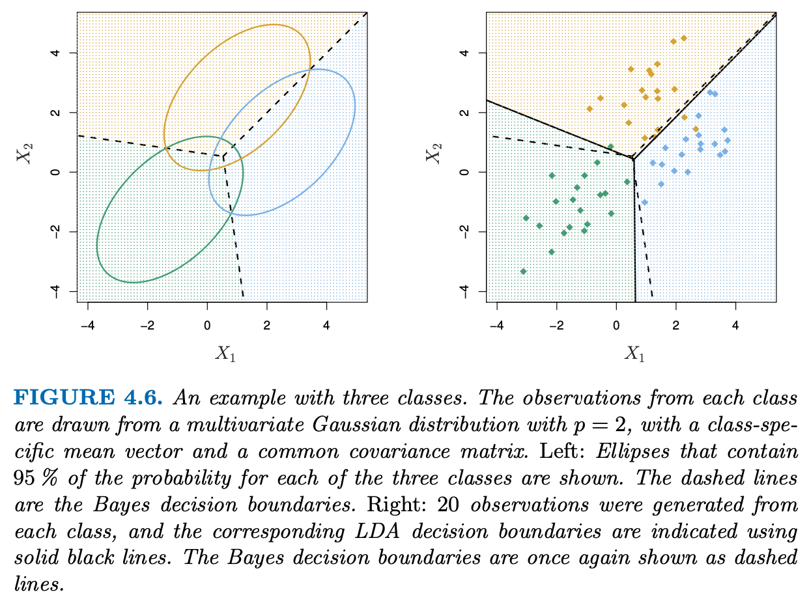
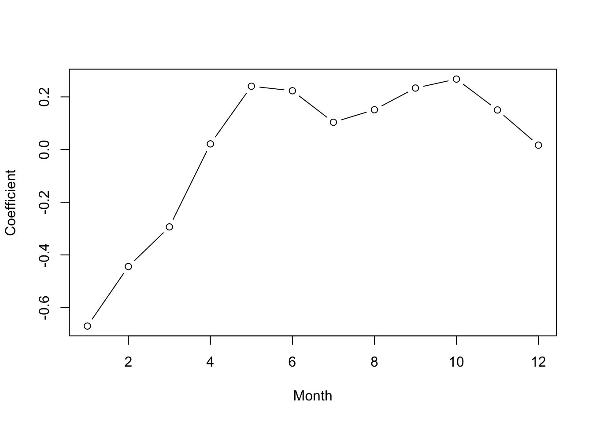
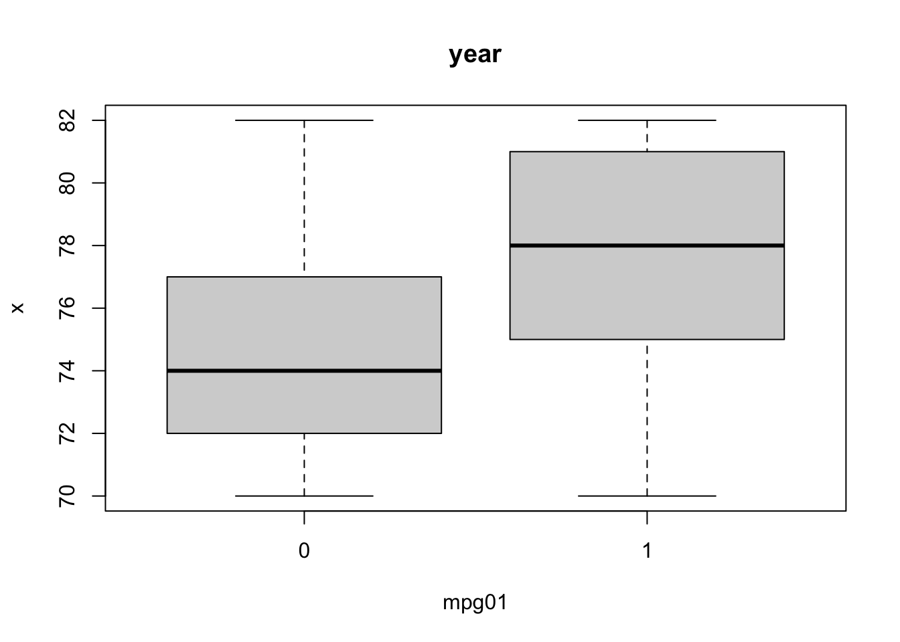
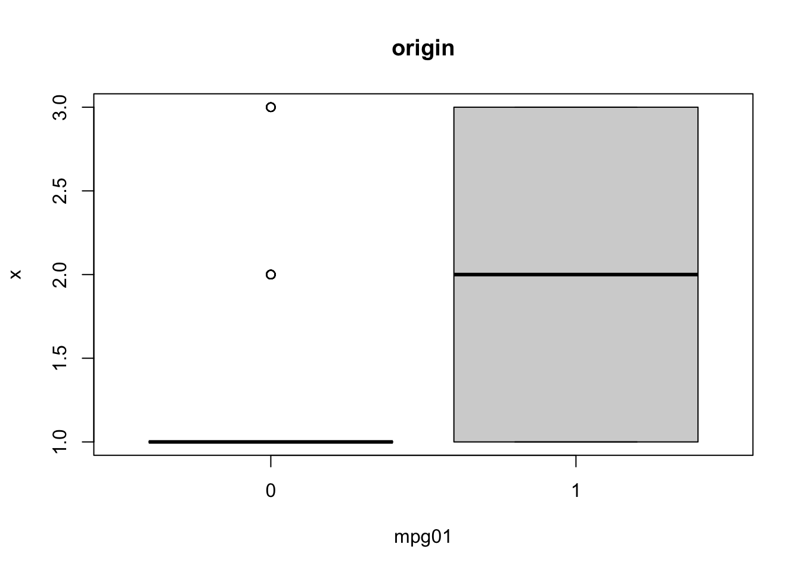

[1] "Year" "Lag1" "Lag2" "Lag3" "Lag4" "Lag5"
[7] "Volume" "Today" "Direction"# view correlations
data_stock %>%
select(where(is.numeric)) %>%
as.matrix %>%
cor %>%
corrplot::corrplot()
The linear regression model discussed in earlier assumes that the response variable \(Y\) is quantitative. But in many situations, the response variable is instead qualitative. In this chapter, we study approaches for predicting qualitative responses, a process that is known as classification.
Just as in the regression setting, in the classification setting we have a set of training observations \((x_1,y_1), \ldots, (x_n,y_n)\) that we can use to build a classifier. We want our classifier to perform well not only on the training data, but also on test observations that were not used to train the classifier.
Could try to code categories to numbers such as
\[ Y = \begin{cases} 1 & \text{if a} \\ 2 & \text{if b} \\ 3 & \text{if c} \\ \end{cases} \] However, this implies an ordering of the outcomes, which means ‘b’ is above ‘a’, ‘c’ is above ‘b’ and the difference between ‘a’ and ‘b’ is the same as the difference between ‘b’ and ‘c’. Typically with categorical variables, order is arbitrary, so it could easily be switched around and lead to a drastically different model. If there is a natural ordering, such as mild, moderate, and severe AND we felt the gap mild and moderate was similar to the gap between moderate and severe, then a 1, 2, 3 coding would be reasonable. Unfortunately, in general there is no natural way to convert a qualitative response variable with more than two levels into a quantitative response that is ready for linear regression.
For a binary (two level) qualitative response, the situation is better. We can use a dummy variable approach to code the response:
\[ Y = \begin{cases} 0 & \text{if a} \\ 1 & \text{if b} \\ \end{cases} \]
We could then fit a linear regression to this binary response, and predict ‘b’ if \(\hat{Y} > 0.5\) and ‘a’ otherwise. In this case, even if we flip the coding, the linear regression will produce the same final predictions (so coding doesn’t matter).
For a binary response with a 0/1 coding as above, regression by least squares is not completely unreasonable: it can be shown that the \(X\hat{\beta}\) obtained using linear regression is in fact an estimate of \(P(Y = 1 \mid X)\) in this special case. However, if we use linear regression, some of our estimates might be outside the [0, 1] interval, making them hard to interpret as probabilities!
Nevertheless, the predictions provide an ordering and can be interpreted as crude probability estimates. Curiously, it turns out that the classifications that we get if we use linear regression to predict a binary response will be the same as for the linear discriminant analysis (LDA) procedure shown later.
To summarize, there are at least two reasons not to perform classification using a regression method: (a) a regression method cannot accommodate a qualitative response with more than two classes; (b) a regression method will not provide meaningful estimates of \(P(Y \mid X)\), even with just two classes. Thus, it is preferable to use a classification method that is truly suited for qualitative response values.
Consider the Default data set, where the response default falls into one of two categories, Yes or No. Rather than modeling this response Y directly, logistic regression models the probability that Y belongs to a particular category.
For the Default data, logistic regression models the probability of default. For example, the probability of default given balance can be written as
\[ P(\text{default} = \text{Yes} \mid \text{balance}) \]
The values of \(P(\text{default} = \text{Yes} \mid \text{balance})\), which we abbreviate \(p(\text{balance})\), will range between 0 and 1. Then for any given value of balance, a prediction can be made for default. For example, one might predict default = Yes for any individual for whom \(p(\text{balance}) > 0.5\). Alternatively, if a company wishes to be conservative in predicting individuals who are at risk for default, then they may choose to use a lower threshold, such as \(p(\text{balance}) > 0.1\).
How should we model the relationship between \(p(X) = P(Y = 1 \mid X)\) and \(X\)? Above, we considered using a linear regression model to represent these probabilities:
\[ p(X) = \beta_0 + \beta_1 X \]
If we use this approach to predict default=Yes using balance, then we obtain the model shown in the left-hand panel of Figure 4.2, which results in the obvious problem of predictions out of bounds. Any time a straight line is fit to a binary response that is coded as 0 or 1, in principle we can always predict \(p(X) < 0\) for some values of \(X\) and \(p(X) > 1\) for others (unless the range of \(X\) is limited).
To avoid this problem, we must model \(p(X)\) using a function that gives outputs between 0 and 1 for all values of X. Many functions meet this description. In logistic regression, we use the logistic function,
\[ p(X) = \frac{\mathrm{e}^{\beta_0 + \beta_1 X}}{1 + \mathrm{e}^{\beta_0 + \beta_1 X}} = \frac{1}{1 + \mathrm{e}^{-(\beta_0 + \beta_1 X)}} \tag{14.1}\]
To fit this model, we use maximum likelihood. The right-hand panel of Figure 4.2 illustrates the fit of the logistic regression model to the Default data. Notice that for low balances we now predict the probability of default as close to, but never below, zero. Likewise, for high balances we predict a default probability close to, but never above, one. The logistic function will always produce an S-shaped curve of this form, and so regardless of the value of \(X\), we will obtain a sensible prediction. We also see that the logistic model is better able to capture the range of probabilities than is the linear regression. The average fitted probability in both cases is 0.0333 (averaged over the training data), which is the same as the overall proportion of defaulters in the data set. We can show:
\[ \begin{align*} p(X) = p &= \frac{\mathrm{e}^{\beta_0 + \beta_1 X}}{1 + \mathrm{e}^{\beta_0 + \beta_1 X}} \quad\text{for simplicity}\\ p(1 + \mathrm{e}^{\beta_0 + \beta_1 X}) &= \mathrm{e}^{\beta_0 + \beta_1 X}\\ p + p\mathrm{e}^{\beta_0 + \beta_1 X} &= \mathrm{e}^{\beta_0 + \beta_1 X}\\ p + p\mathrm{e}^{\beta_0 + \beta_1 X} - \mathrm{e}^{\beta_0 + \beta_1 X} &= 0\\ p + \mathrm{e}^{\beta_0 + \beta_1 X}(p - 1) &= 0\\ \mathrm{e}^{\beta_0 + \beta_1 X}(p - 1) &= -p\\ \mathrm{e}^{\beta_0 + \beta_1 X} &= \frac{-p}{p - 1}\\ \mathrm{e}^{\beta_0 + \beta_1 X} &= \frac{p(X)}{1 - p(X)}\\ \end{align*} \]
The quantity \(p(X) / [1 - p(X)]\) is called the odds, and can take on any value between 0 and \(\infty\). Values of the odds close to 0 and \(\infty\) indicate very low and very high probabilities of default, respectively.For example, on average 1 in 5 people with an odds of 1/4 will default, since \(p(X) = 0.2\) implies an odds of \(\frac{0.2}{1 - 0.2} = 1/4\).
By taking the logarithm of both sides, we arrive at the log odds or logit.
\[ \log\Big(\frac{p(X)}{1 - p(X)}\Big) = \beta_0 + \beta_1 X \tag{14.2}\]
Thus, we see that the logistic regression model \(p(X) = \frac{\mathrm{e}^{\beta_0 + \beta_1 X}}{1 + \mathrm{e}^{\beta_0 + \beta_1 X}}\) has a logit that is linear in \(X\).
Now in a logistic regression model, increasing \(X\) by one unit changes the log odds by \(\beta_1\). Equivalently, it multiplies the odds by \(\mathrm{e}^{\beta_1}\). However, because the relationship between \(p(X)\) and \(X\) is not a straight line anymore, \(\beta_1\) does not correspond to the change in \(p(X)\) associated with a one-unit increase in X. The amount that \(p(X)\) changes due to a one-unit change in \(X\) depends on the current value of \(X\). But regardless of the value of \(X\), if \(\beta_1\) is positive then increasing \(X\) will be associated with increasing \(p(X)\), and if \(\beta_1\) is negative then increasing \(X\) will be associated with decreasing \(p(X)\).
The coefficients in Equation 14.1 are unknown, and must be estimated based on the available training data. Although we could use (non-linear) least squares to fit the model Equation 14.2, the more general method of maximum likelihood is preferred, since it has better statistical properties. The basic intuition behind using maximum likelihood to fit a logistic regression model is as follows: we seek estimates for \(\beta_0\) and \(\beta_1\) such that the predicted probability \(\hat{p}(x_i)\) of default for each individual, using Equation 14.1, corresponds as closely as possible to the individual’s observed default status. In other words, we try to find \(\hat{\beta}_0\) and \(\hat{\beta}_1\) such that plugging these estimates into the model for \(p(X)\), given in Equation 14.1, yields a number close to one for all individuals who defaulted, and a number close to zero for all individuals who did not. This intuition can be formalized using a mathematical equation called a likelihood function:
\[ \ell(\beta_0, \beta_1) = \prod_{i:y_i = 1} p(x_i) \prod_{i':y_{i'}=0} (1 - p(x_{i'})) \tag{14.3}\]
(note that this notation is the same as the following, just without the powers)
\[ \ell(\beta_0, \beta_1) = \prod_{i = 1}^n p(x_i)^{y_i} (1 - p(x_i))^{1 - y_i} \]
The estimates \(\hat{\beta}_0\) and \(\hat{\beta}_1\) are chosen to maximize this likelihood function. Said another way: to minimize the mis-classification rate, we should predict \(Y = 1\) when \(p \ge 0.5\) and \(Y = 0\) when \(p < 0.5\). This means guessing 1 whenever \(\beta_0 + X\beta\) is non-negative (as seen in the last version of Equation 14.1, where \(\frac{1}{1 + \mathrm{e}^{-0}} = 1/2\) is the cutoff point), and 0 otherwise. So logistic regression gives us a linear classifier. The decision boundary separating the two predicted classes is the solution of \(\beta_0 + X \beta_1 = 0\), which is a point if \(X\) is one dimensional, a line if it is two dimensional, etc.
Maximum likelihood is a very general approach that is used to fit many of the non-linear models that we examine throughout this book. In the linear regression setting, the least squares approach is in fact a special case of maximum likelihood.
Many aspects of the logistic regression output shown in Table 4.1 are similar to the linear regression output in the previous chapter. For example, we can measure the accuracy of the coefficient estimates by computing their standard errors. The z-statistic in Table 4.1 plays the same role as the t-statistic in the linear regression output. For instance, the z-statistic associated with \(\beta_1\) is equal to \(\beta_1/SE(\beta_1)\), and so a large (absolute) value of the z-statistic indicates evidence against the null hypothesis \(H_0: \beta_1 = 0\). This null hypothesis implies that \(p(X) = e^{\beta_0}\): in other words, that the probability of default does not depend on balance. The estimated intercept in Table 4.1 is typically not of interest; its main purpose is to adjust the average fitted probabilities to the proportion of ones in the data (in this case, the overall default rate).
Once the coefficients have been estimated, we can compute the probability of default for any given credit card balance.
We now consider the problem of predicting a binary response using multiple predictors. By analogy with the extension from simple to multiple linear regression in the previous chapter, we can generalize Equation 14.2 as follows:
\[ \log\Big(\frac{p(X)}{1 - p(X)}\Big) = \beta_0 + \beta_1 X_1 + \cdots + \beta_p X_p \tag{14.4}\]
This can be rewritten as:
\[ p(X) = \frac{\mathrm{e}^{\beta_0 + \beta_1 X_1 + \cdots + \beta_p X_p}}{1 + \mathrm{e}^{\beta_0 + \beta_1 X_1 + \cdots + \beta_p X_p}} \tag{14.5}\]
Then we use maximum likelihood method as before. Beware of interpreting the effects (mainly the sign) of coefficients when some important predictors may be missing from your model. Confounding is an issue, just like in MLR.
We sometimes wish to classify a response variable that has more than two classes. It turns out that it is possible to extend the two-class logistic regression approach to the setting of \(K > 2\) classes. This extension is sometimes known as multinomial logistic regression. To do this, we first select a single class to serve as the baseline; without loss of generality, we select the \(K\)th class for this role. Then we replace the model Equation 14.5 with the model
\[ p(Y = k \mid X = x) = \frac{\mathrm{e}^{\beta_{k0} + \beta_{k1} X_1 + \cdots + \beta_{kp} X_p}}{1 + \sum_{l = 1}^{K - 1}\mathrm{e}^{\beta_{l0} + \beta_{l1} X_1 + \cdots + \beta_{lp} X_p}} \]
for \(k = 1, \ldots, K-1\) and
\[ p(Y = K \mid X = x) = \frac{1}{1 + \sum_{l = 1}^{K - 1}\mathrm{e}^{\beta_{l0} + \beta_{l1} X_1 + \cdots + \beta_{lp} X_p}} \]
It is not hard to show that for \(k = 1, \ldots, K-1\),
\[ \log\Big(\frac{P(Y = k \mid X = x)}{P(Y = K \mid X = x)}\Big) = \beta_{k0} + \beta_{k1} X_1 + \cdots + \beta_{kp} X_p \tag{14.6}\]
Notice that this is quite similar to Equation 14.2 and indicates that once again, the log odds between any pair of classes is linear in the features. The decision of which class to have as the baseline is unimportant. If we were to change the baseline, the coefficient estimates would differ between the two fitted models, but the fitted values (predictions), the log odds between any pair of classes, and the other key model outputs will remain the same. Nonetheless, interpretation of the coefficients in a multinomial logistic regression model must be done with care, since it is tied to the choice of baseline.
Textbook presents an alternative coding for multinomial logistic regression, known as the softmax coding. This is used a lot in machine learning; skipping for now.
Logistic regression involves directly modeling \(P(Y = k \mid X = x)\) using the logistic function, given by eq-logistic-function-multiple for the case of two response classes. In statistical jargon, we model the conditional distribution of the response \(Y\), given the predictor(s) \(X\). We now consider an alternative and less direct approach to estimating these probabilities. In this new approach, we model the distribution of the predictors \(X\) separately in each of the response classes (i.e. for each value of \(Y\)). We then use Bayes’ theorem to flip these around into estimates for \(P(Y = k \mid X = x)\). When the distribution of \(X\) within each class is assumed to be normal, it turns out that the model is very similar in form to logistic regression.
Why do we need another method, when we have logistic regression? There are several reasons:
When there is substantial separation between the two classes, the parameter estimates for the logistic regression model are surprisingly unstable. The methods that we consider in this section do not suffer from this problem.
If the distribution of the predictors \(X\) is approximately normal in each of the classes and the sample size is small, then the approaches in this section may be more accurate than logistic regression.
The methods in this section can be naturally extended to the case of more than two response classes.
Suppose that we wish to classify an observation into one of \(K\) classes, where \(K \ge 2\). In other words, the qualitative response variable \(Y\) can take on $ K$ possible distinct and unordered values. Let \(\pi_k\) represent the overall or prior probability that a randomly chosen observation comes from the \(k\)th class. Let \(f_k(X) \equiv P(X \mid Y = k)\) denote the density function of \(X\) for an observation that comes from the \(k\)th class. In other words, \(f_k(x)\) is relatively large if there is a high probability that an observation in the \(k\)th class has \(X \approx x\), and \(f_k(x)\) is small if it is very unlikely that an observation in the \(k\)th class has \(X \approx x\). Then Bayes’ theorem states that
\[ P(Y = k \mid X = x) = \frac{\pi_k f_k(x)}{\sum_{l = 1}^K \pi_l f_l(x)} \tag{14.7}\]
!!! draw tree picture
In accordance with our earlier notation, we will use the abbreviation \(p_k(x) = P(Y = k \mid X = x)\); this is the posterior probability that an observation \(X = x\) belongs to the \(k\)th class. That is, it is the probability that the observation belongs to the \(k\)th class, given the predictor value for that observation.
The above equation suggests that instead of directly computing the posterior probability \(p_k(x)\) as in Section 14.1.3.1, we can simply plug in estimates of \(\pi_k\) and \(f_k(x)\) into Equation 14.7. In general, estimating \(\pi_k\) is easy if we have a random sample from the population: we simply compute the fraction of the training observations that belong to the \(k\)th class. However, estimating the density function \(f_k(x)\) is much more challenging. As we will see, to estimate \(f_k(x)\), we will typically have to make some simplifying assumptions.
We know from earlier that the Bayes classifier, which classifies an observation \(x\) to the class for which \(p_k(x)\) is largest, has the lowest possible error rate out of all classifiers. (Of course, this is only true if all of the terms in Equation 14.7 are correctly specified.) Therefore, if we can find a way to estimate \(f_k(x)\), then we can plug it into Equation 14.7 in order to approximate the Bayes classifier.
In the following sections, we discuss three classifiers that use different estimates of \(f_k(x)\) in Equation 14.7 to approximate the Bayes classifier: linear discriminant analysis, quadratic discriminant analysis, and naive Bayes.
For now, assume that \(p = 1\) —- that is, we have only one predictor. We would like to obtain an estimate for \(f_k(x)\) that we can plug into Equation 14.7 in order to estimate \(p_k(x)\). We will then classify an observation to the class for which \(p_k(x)\) is greatest. To estimate \(f_k(x)\), we will first make some assumptions about its form.
In particular, we assume that \(f_k(x)\) is normal or Gaussian. In the one- normal dimensional setting, the normal density takes the form
\[ f_k(x) = \frac{1}{\sqrt{2\pi} \sigma_k} \exp\Big(-\frac{1}{2\sigma_k^2}(x - \mu_k)^2\Big) \tag{14.8}\]
where \(\mu_k\) and \(\sigma_k^2\) are the mean and variance parameters for the \(k\)th class. For now, let us further assume that \(\sigma_1^2 = \cdots = \sigma_K^2\), that is, there is a shared variance term across all \(K\) classes, which for simplicity we can denote by \(\sigma^2\). Plugging this into Equation 14.7, we find that
\[ p_k(x) = \frac{\pi_k \frac{1}{\sqrt{2\pi} \sigma} \exp\big(-\frac{1}{2\sigma^2}(x - \mu_k)^2\big)}{\sum_{l = 1}^K \pi_l \frac{1}{\sqrt{2\pi} \sigma} \exp\big(-\frac{1}{2\sigma^2}(x - \mu_l)^2\big)} \]
The Bayes classifier involves assigning an observation \(X = x\) to the class for which the above equation is the largest (recall this Bayes classifier is different than Bayes theorem Equation 14.7, which allows us to manipulate conditional distributions). Taking the log of this and rearranging the terms, it is not hard to show that this is equivalent to assigning the observation to the class for which
\[ \delta_k(x) = x \frac{\mu_k}{\sigma^2} - \frac{\mu_k^2}{2\sigma^2} + \log(\pi_k) \tag{14.9}\]
is largest. For instance, if \(K = 2\) and \(\pi_1 = \pi_2\), then the Bayes classifier assignes an observation to class 1 if \(2x(\mu_1 - \mu_2) > \mu_1^2 - \mu_2^2\) and to class 2 otherwise. The Bayes decision boundary is the point for which \(\delta_1(x) = \delta_2(x)\); one can show that this amounts to
\[ x = \frac{\mu_1^2 - \mu_2^2}{2(\mu_1 - \mu_2)} = \frac{\mu_1 + \mu_2}{2} \tag{14.10}\]
An example is shown in the left-hand panel of Figure 4.4. The two normal density functions that are displayed, \(f_1(x)\) and \(f_2(x)\), represent two distinct classes. The mean and variance parameters for the two density functions are \(\mu_1 = −1.25, \mu_2 = 1.25\) and \(\sigma_1^2 = \sigma_2^2 = 1\). The two densities overlap, and so given that \(X = x\), there is some uncertainty about the class to which the observation belongs. If we assume that an observation is equally likely to come from either class – that is, \(\pi_1 = \pi_2 = 0.5\) –then by inspection of @bayes-decision-boundary2, we see that the Bayes classifier assigns the observation to class 1 if \(x < 0\) and class 2 otherwise. Note that in this case, we can compute the Bayes classifier because we know that \(X\) is drawn from a Gaussian distribution within each class, and we know all of the parameters involved. In a real-life situation, we are not able to calculate the Bayes classifier.
In practice, even if we are quite certain of our assumption that \(X\) is drawn from a Gaussian distribution within each class, to apply the Bayes classifier we still have to estimate the parameters \(\mu_1, \ldots, \mu_K, \pi_1, \ldots, \pi_K\), and \(\sigma^2\). The linear discriminant analysis (LDA) method approximates the Bayes classifier by plugging estimates for \(\pi_k\), \(\mu_k\), and \(\sigma^2\) into @bayes-decision-boundary. In particular, the following estimates are used:
\[ \begin{align*} \hat{\mu}_k &= \frac{1}{n_k} \sum_{i:y_i = k} x_i\\ \hat{\sigma}^2 &= \frac{1}{n - K} \sum_{k = 1}^K \sum_{i:y_i = k} (x_i - \hat{\mu}_k)^2\\ \end{align*} \]
where \(n\) is the total number of training observations, and \(n_k\) is the number of training observations in the \(k\)th class. The estimate for \(\mu_k\) is simply the average of all the training observations from the \(k\)th class, while \(\sigma^2\) can be seen as a weighted average of the sample variances for each of the \(K\) classes. Sometimes we have knowledge of the class membership probabilities \(\pi_1, \ldots, \pi_K\), which can be used directly. In the absence of any additional information, LDA estimates \(\pi_k\) using the proportion of the training observations that belong to the \(k\)th class. In other words,
\[ \hat{\pi}_k = n_k / n \]
The LDA classifier plugs the estimates above into Equation 14.9 and assigns an observation \(X = x\) to the class for which
\[ \hat{\delta}_k(x) = x \frac{\hat{\mu}_k}{\hat{\sigma}^2} - \frac{\hat{\mu}_k^2}{2\hat{\sigma}^2} + \log(\hat{\pi}_k) \]
is largest. The word linear in the classifier’s name stems from the fact that the discriminant functions \(\hat{\delta}_k(x)\) above are linear functions of \(x\) (as discriminant opposed to a more complex function of \(x\)).
The right-hand panel of Figure 4.4 displays a histogram of a random sample of 20 observations from each class. In this case, since \(n_1 = n_2 = 20\), we have \(\hat{\pi}_1 = \hat{\pi}_2\). As a result, the decision boundary corresponds to the midpoint between the sample means for the two classes, \((\hat{\mu}_1 + \hat{\mu}_2) / 2\).
To reiterate, the LDA classifier results from assuming that the observations within each class come from a normal distribution with a class-specific mean and a common variance \(\sigma^2\), and plugging estimates for these parameters into the Bayes classifier. In a later section, we will consider a less stringent set of assumptions, by allowing the observations in the \(k\)th class to have a class-specific variance, \(\sigma_k^2\).
We now extend the LDA classifier to the case of multiple predictors. To do this, we will assume that \(X = (X_1, X_2, \ldots, X_p)\) is drawn from a multivariate Gaussian (or multivariate normal) distribution, with a class-specific mean vector and a common covariance matrix.
The multivariate Gaussian distribution assumes that each individual predictor follows a one-dimensional normal distribution, as in Equation 14.8, with some correlation between each pair of predictors.
To indicate that a \(p\)-dimensional random variable \(X\) has a multivariate Gaussian distribution, we write \(X \sim \text{N}\,(\mu, \Sigma)\). Here, \(E(X) = \mu\) is the mean of \(X\) (a vector with \(p\) components), and \(\text{Cov}(X) = \Sigma\) is the \(p \times p\) covariance matrix of \(X\). Formally, the multivariate Gaussian density is defined as
\[ f(x) = \frac{1}{(2\pi)^{p/2} \lvert \Sigma \rvert^{1/2}} \exp\Big(-\frac{1}{2}(x - \mu)^T \Sigma^{-1} (x - \mu)\Big) \]
In the case of \(p > 1\) predictors, the LDA classifier assumes that the observations in the \(k\)th class are drawn from a multivariate Gaussian distribution \(N(\mu_k, \Sigma)\), where \(\mu_k\) is a class-specific mean vector, and \(\Sigma\) is a covariance matrix that is common to all \(K\) classes. Plugging the density function for the \(k\)th class, \(f_k(X = x)\), into Equation 14.7 and performing a little bit of algebra reveals that the Bayes classifier assigns an observation \(X = x\) to the class for which
\[ \delta_k(x) = x^T \Sigma^{-1}\mu_k - \frac{1}{2}\mu_k^T \Sigma^{-1}\mu_k + \log \pi_k \tag{14.11}\]
is largest. This is the vector / matrix version of Equation 14.9.
An example is shown in the left-hand panel of Figure 4.6.

Three equally-sized Gaussian classes are shown with class-specific mean vectors and a common covariance matrix. The three ellipses represent regions that contain 95% of the probability for each of the three classes. The dashed lines are the Bayes decision boundaries. In other words, they represent the set of values x for which \(\delta_k(x) = \delta_l(x)\); i.e.
\[ x^T \Sigma^{-1}\mu_k - \frac{1}{2}\mu_k^T \Sigma^{-1}\mu_k = x^T \Sigma^{-1}\mu_l - \frac{1}{2}\mu_l^T \Sigma^{-1}\mu_l \]
for \(k \ne l\). (The \(\log \pi_k\)) term has disappeared because each of the three classes has the same number of training observations). Note that there are three lines representing the Bayes decision boundaries because there are three pairs of classes among the three classes. That is, one Bayes decision boundary separates class 1 from class 2, one separates class 1 from class 3, and one separates class 2 from class 3. These three Bayes decision boundaries divide the predictor space into three regions. The Bayes classifier will classify an observation according to the region in which it is located.
Once again, estimate the all the unknown parameters, similarly to how performed with \(p = 1\) and plug into Equation 14.11. Then assign the class to that which results in the largest \(\hat{\delta}_k(x)\). Note that this is still a linear function of \(x\)
Results of classification can be compactly shown in confusion matrices.
For the default data, the LDA model fit to the 10,000 training samples results in a training error rate of 2.75%. This sounds like a low error rate, but two caveats must be noted.
First of all, training error rates will usually be lower than test error rates, which are the real quantity of interest.
Second, since only 3.33% of the individuals in the training sample defaulted, a simple but useless classifier that always predicts that an individual will not default, regardless of his or her credit card balance and student status, will result in an error rate of 3.33 %. In other words, the trivial null classifier will achieve an error rate that null is only a bit higher than the LDA training set error rate.
In practice, a binary classifier such as this one can make two types of errors: it can incorrectly assign an individual who defaults to the no default category, or it can incorrectly assign an individual who does not default to the default category. It is often of interest to determine which of these two types of errors are being made. The table reveals that LDA predicted that a total of 104 people would default. Of these people, 81 actually defaulted and 23 did not. Hence only 23 out of 9,667 of the individuals who did not default were incorrectly labeled. This looks like a pretty low error rate! However, of the 333 individuals who defaulted, 252 (or 75.7%) were missed by LDA. So while the overall error rate is low, the error rate among individuals who defaulted is very high.
Also, notice that in this example student status is qualitative – thus, the normality assumption made by LDA is clearly violated! However, LDA is often remarkably robust to model violations, as this example shows. Naive Bayes, discussed later, provides an alternative to LDA that does not assume normally distributed predictors.
Class-specific performance is also important in medicine and biology, where the terms sensitivity and specificity characterize the performance of a classifier or screening test.
Sensitivity = true positive % (e.g. true defaulters that are identified; 81/333 = 24.3%)
Specificity = true negative % (e.g. true non-defaulters that are identified; 9644/9667 = 1 - 23/9667 = 99.8%)
Why does LDA do such a poor job of classifying the customers who default? In other words, why does it have such low sensitivity? As we have seen, LDA is trying to approximate the Bayes classifier, which has the lowest total error rate out of all classifiers. That is, the Bayes classifier will yield the smallest possible total number of misclassified observations, regardless of the class from which the errors stem. Some misclassifications will result from incorrectly assigning a customer who does not default to the default class, and others will result from incorrectly assigning a customer who defaults to the non-default class. In contrast, a credit card company might particularly wish to avoid incorrectly classifying an individual who will default, whereas incorrectly classifying an individual who will not default, though still to be avoided, is less problematic. We will now see that it is possible to modify LDA in order to develop a classifier that better meets the credit card company’s needs.
The Bayes classifier works by assigning an observation to the class for which the posterior probability \(p_k(X)\) is greatest. In the two-class case, this amounts to assigning an observation to the default class if
\[ P(\text{default} = \text{Yes} \mid X = x) > 0.5 \]
Thus, the Bayes classifier, and by extension LDA, uses a threshold of 50 % for the posterior probability of default in order to assign an observation to the default class. However, if we are concerned about incorrectly predicting the default status for individuals who default, then we can consider lowering this threshold. For instance, we might label any customer with a posterior probability of default above 20% to the default class:
\[ P(\text{default} = \text{Yes} \mid X = x) > 0.2 \]
The error rates that result from taking this approach are shown in Table 4.5. Now LDA predicts that 430 individuals will default. Of the 333 individuals who default, LDA correctly predicts all but 138, or 41.4 %. This is a vast improvement over the error rate of 75.7% that resulted from using the threshold of 50%. However, this improvement comes at a cost: now 235 individuals who do not default are incorrectly classified. As a result, the overall error rate has increased slightly to 3.73 %.
Figure 4.7 illustrates the trade-off that results from modifying the threshold value for the posterior probability of default. Various error rates are shown as a function of the threshold value. How can we decide which threshold value is best? Such a decision must be based on domain knowledge, such as detailed information about the costs associated with default.
Increasing threshold to say 80% causes:
Sensitivity to DECREASE and specificity to INCREASE (good source, for modelling too).
This means higher proportion of true negatives, with the cost of lower proportion of true positives.
Predict more as no (harder to predict as yes), so capture more true no’s, but miss some of the yes’s.
Just flip below: False positive rate decreases, but the false negative rate increases.
Thus, decreasing the threshold:
Just flip above: Sensitivity increases and specificity decreases.
Error rates:
Decreases the false negative rate (error rate among defaulters), because more confident in the negatives.
But increases the false positive rate (error rate among non-defaulters), because easier to be classified as yes.
Thus increasing the threshold **
The ROC curve is a popular graphic for simultaneously displaying the two types of errors for all possible thresholds. The overall performance of a classifier, summarized over all possible thresholds, is given by the area under the (ROC) curve (AUC). An ideal ROC curve will hug the top left corner, so the larger the AUC the better the classifier. We expect a classifier that performs no better than chance to have an AUC of 0.5 (when evaluated on an independent test set not used in model training). ROC curves are useful for comparing different classifiers, since they take into account all possible thresholds. As we have seen above, varying the classifier threshold changes its true positive and false positive rate. These are also called the sensitivity and one minus the specificity of our classifier.
Here is a summary of the terms in this section. To make the connection with the epidemiology literature, we think of “+” as the “disease” that we are trying to detect, and “−” as the “non-disease” state. To make the connection to the classical hypothesis testing literature, we think of “−” as the null hypothesis and “’+” as the alternative (non-null) hypothesis. In the context of the Default data, “+” indicates an individual who defaults, and “−” indicates one who does not.
Sensitivity = true positive rate
Specificity = true negative rate
As we have discussed, LDA assumes that the observations within each class are drawn from a multivariate Gaussian distribution with a class-specific mean vector and a covariance matrix that is common to all \(K\) classes. Quadratic discriminant analysis (QDA) provides an alternative approach. Like LDA, the QDA classifier results from assuming that the observations from each class are drawn from a Gaussian distribution, and plugging estimates for the parameters into Bayes’ theorem in order to perform prediction. However, unlike LDA, QDA assumes that each class has its own covariance matrix. That is, it assumes that an observation from the kth class is of the form \(X \sim N(\mu_k,\Sigma_k)\), where \(\Sigma_k\) is a covariance matrix for the \(k\)th class. Under this assumption, the Bayes classifier assigns an observation \(X = x\) to the class for which
is the largest. Unlike before, the quantity \(x\) appears as a quadratic function now.
Why does it matter whether or not we assume that the K classes share a common covariance matrix? In other words, why would one prefer LDA to QDA, or vice-versa? The answer lies in the bias-variance trade-off. When there are \(p\) predictors, then estimating a covariance matrix requires estimating \(p(p+1)/2\) parameters (lower triangle + diagonal). QDA estimates a separate covariance matrix for each class, for a total of \(Kp(p+1)/2\) parameters. With 50 predictors this is some multiple of 1,275, which is a lot of parameters. By instead assuming that the \(K\) classes share a common covariance matrix, the LDA model becomes linear in \(x\), which means there are \(Kp\) linear coefficients to estimate. Consequently, LDA is a much less flexible classifier than QDA, and so has substantially lower variance. This can potentially lead to improved prediction performance. But there is a trade-off: if LDA’s assumption that the \(K\) classes share a common covariance matrix is badly off, then LDA can suffer from high bias. Roughly speaking, LDA tends to be a better bet than QDA if there are relatively few training observations and so reducing variance is crucial. In contrast, QDA is recommended if the training set is very large, so that the variance of the classifier is not a major concern, or if the assumption of a common covariance matrix for the \(K\) classes is clearly untenable.
Figure 4.9 illustrates the performances of LDA and QDA in two scenarios. In the left-hand panel, the two Gaussian classes have a common correlation of 0.7 between \(X_1\) and \(X_2\). As a result, the Bayes decision boundary is linear and is accurately approximated by the LDA decision boundary. The QDA decision boundary is inferior, because it suffers from higher variance without a corresponding decrease in bias. In contrast, the right-hand panel displays a situation in which the orange class has a correlation of 0.7 between the variables and the blue class has a correlation of −0.7. Now the Bayes decision boundary is quadratic, and so QDA more accurately approximates this boundary than does LDA.
Here, we use Bayes’ theorem to motivate the popular naive Bayes classifier. Recall that Bayes’ theorem Equation 14.7 provides an expression for the posterior probability \(p_k(x) = P(Y = k \mid X = x)\) in terms of \(\pi_1, \ldots, \pi_K\) and \(f_k(x), \ldots, f_K(x)\). To use this in practice, we need estimates for for these terms. Estimating the prior probabilities \(\pi_k\) is typically straightforward.
However estimating \(f_k(x)\) is more subtle. Recall that \(f_k(x)\) is the \(p\)-dimensional density function for an observation in the \(k\)th class, for \(k = 1, \ldots, K\). In general, estimating a \(p\)-dimensional density function is challenging. In LDA, we make a very strong assumption that greatly simplifies the task: we assume that \(f_k\) is the density function for a multivariate normal random variable with class-specific mean \(\mu_k\), and shared covariance matrix \(\Sigma\). By contrast, in QDA we change it to have class-specific covariance matrix \(\Sigma_k\). By making these very strong assumptions, we are able to replace the very challenging problem of estimating \(K\) \(p\)-dimensional density functions with the much simpler problem of estimating \(K\) \(p\)-dimensional mean vectors and one (in the case of LDA) or \(K\) (in the case of QDA) \((p \times p)\)-dimensional covariance matrices.
The naive Bayes classifier takes a different tack for estimating \(f_1(x), \ldots, f_K(x)\). Instead of assuming that these functions belong to a particular family of distributions (e.g. multivariate normal), we instead make a single assumption:
Within the kth class, the \(p\) predictors are independent.
Stated mathematically, this assumption means that for \(k = 1, \ldots, K\),
\[ f_k(x) = f_{k1}(x_1) \times f_{k2}(x_2) \times \cdots \times f_{kp}(x_p) \tag{14.12}\]
where \(f_{kj}\) is the density function of the \(j\)th predictor among observations in the \(k\)th class.
Why is this assumption so powerful? Essentially, estimating a \(p\)-dimensional density function is challenging because we must consider not only the marginal distribution of each predictor – that is, the distribution of each predictor on its own – but also the joint distribution of the predictors – that is, the association between the different predictors. In the case of a multivariate normal distribution, the association between the different predictors is summarized by the off-diagonal elements of the covariance matrix. However, in general, this association can be very hard to characterize, and exceedingly challenging to estimate. But by assuming that the \(p\) covariates are independent within each class, we completely eliminate the need to worry about the association between the \(p\) predictors, because we have simply assumed that there is no association between the predictors!
Do we really believe the naive Bayes assumption that the \(p\) covariates are independent within each class? In most settings, we do not. But even though this modeling assumption is made for convenience, it often leads to pretty decent results, especially in settings where \(n\) is not large enough relative to \(p\) for us to effectively estimate the joint distribution of the predictors within each class. In fact, since estimating a joint distribution requires such a huge amount of data, naive Bayes is a good choice in a wide range of settings. Essentially, the naive Bayes assumption introduces some bias, but reduces variance, leading to a classifier that works quite well in practice as a result of the bias-variance trade-off.
Once we have made the naive Bayes assumption, we can plug Equation 14.12 into Equation 14.7 to obtain an expression for the posterior probability,
\[ P(Y = k \mid X = x) = \frac{\pi_k \times f_{k1}(x_1) \times \cdots \times f_{kp}(x_p)}{\sum_{l = 1}^K \pi_l \times f_{l1}(x_1) \times \cdots \times f_{lp}(x_p)} \]
for \(k = 1, \ldots, K\).
To estimate the one-dimensional density function \(f_{kj}\) using training data \(x_{1j}, \cdots, x_{nj}\), we have a few options.
If \(X_j\) is quantitative, then we can assume that \(X_j \mid Y = k \sim N(\mu_{jk}, \sigma_{jk}^2)\). In other words, we assume that within each class, the \(j\)th predictor is drawn from a (univariate) normal distribution. While this may sound a bit like QDA, there is one key difference, in that here we are assuming that the predictors are independent; this amounts to QDA with an additional assumption that the class-specific covariance matrix is diagonal.
If \(X_j\) is quantitative, then another option is to use a non-parametric estimate for \(f_{kj}\). A very simple way to do this is by making a histogram for the observations of the \(j\)th predictor within each class. Then we can estimate \(f_{kj}(x_j)\) as the fraction of the training observations in the \(k\)th class that belong to the same histogram bin as \(x_j\). Alternatively, we can use a kernel density estimator, which is essentially a smoothed version of a histogram.
If \(X_j\) is qualitative, then we can simply count the proportion of training observations for the \(j\)th predictor corresponding to each class. For instance, suppose that \(X_j \in \{1, 2, 3\}\), and we have 100 observations in the \(k\)th class. Suppose that the \(j\)th predictor takes on values of 1, 2, and 3 in 32, 55, and 13 of those observations, respectively. Then we can estimate \(f_{kj}\) as
\[ \hat{f}_{kj}(x_j) = \begin{cases} 0.32 & \text{if } x_j = 1\\ 0.55 & \text{if } x_j = 2\\ 0.13 & \text{if } x_j = 3\\ \end{cases} \]
Just as with LDA, we can easily adjust the probability threshold for predicting a default. In this example, it should not be too surprising that naive Bayes does not convincingly outperform LDA: this data set has \(n = 10,000\) and \(p = 4\), and so the reduction in variance resulting from the naive Bayes assumption is not necessarily worthwhile. We expect to see a greater pay-off to using naive Bayes relative to LDA or QDA in instances where \(p\) is larger or \(n\) is smaller, so that reducing the variance is very important.
We now perform an analytical (or mathematical) comparison of LDA, QDA, naive Bayes, and logistic regression. We consider these approaches in a setting with K classes, so that we assign an observation to the class that maximizes \(P(Y = k \mid X = x)\). Equivalently, we can set \(K\) as the baseline class and assign an observation to the class that maximizes
\[ \log\Big(\frac{P(Y = k \mid X = x)}{P(Y = K \mid X = x)}\Big) \]
for \(k = 1, \ldots, K\). Examining the specific form of this equation for each method provides a clear understanding of their similarities and differences.
where \(a_k = \log\Big(\frac{\pi_k}{\pi_K}\Big) - \frac{1}{2}(\mu_k + \mu_K)^T \Sigma^{-1}(\mu_k - \mu_K)\) and \(b_{kj}\) is the \(j\)th component of \(\Sigma^{-1}(\mu_k - \mu_K)\). Hence LDA, like logistic regression, assumes that the log odds of the posterior probabilities is linear in \(x\).
Using similar calculations, in the QDA setting this becomes
Again, as the name suggests, QDA assumes that the log odds of the posterior probabilities is quadratic in \(x\).
Finally with naive Bayes setting, we get
where \(a_k = \log\big(\frac{\pi_k}{\pi_K}\big)\) and \(g_{kj}(x_j) = \log\big(\frac{f_{kj}(x_j)}{f_{Kj}(x_j)}\big)\). Hence, the right-hand side of above takes the form of a generalized additive model, which will be discussed later.
Inspection of the above results yields the following observations about LDA, QDA, and naive Bayes:
LDA is a special case of QDA with \(c_{kjl} = 0\) for all \(j = 1, \ldots, p, l = 1, \ldots, p\), and \(k = 1, \ldots, K\). (Of course, this is not surprising, since LDA is simply a restricted version of QDA with \(\Sigma_1 = \cdots = \Sigma_K = \Sigma\).)
Any classifier with a linear decision boundary is a special case of naive Bayes with \(g_{kj}(x_j) = b_{kj}x_j\). In particular, this means that LDA is a special case of naive Bayes! This is not at all obvious from the descriptions of LDA and naive Bayes earlier in the chapter, since each method makes very different assumptions: LDA assumes that the features are normally distributed with a common within-class covariance matrix, and naive Bayes instead assumes independence of the features.
If we model \(f_{kj}(x_j)\) in the naive Bayes classifier using a one-dimensional Gaussian distribution \(N(\mu_{kj}, \sigma_j^2)\), then we end up with \(g_{kj}(x_j) = b_{kj}x_j\) where \(b_{kj} = (\mu_{kj} - \mu_{Kj}) / \sigma_j^2\). In this case, naive Bayes is actually a special case of LDA with \(\Sigma\) restricted to be a diagonal matrix with \(j\)th diagonal element equal to \(\sigma_j^2\).
Neither QDA nor naive Bayes is a special case of the other. Naive Bayes can produce a more flexible fit, since any choice can be made for \(g_{kj}(x_j)\). However, it is restricted to a purely additive fit, in the sense that in the final derivation, a function of \(x_j\) is added to a function of \(x\), for \(j \ne l\); however, these terms are never multiplied. By contrast, QDA includes multiplicative terms of the form \(c_{kjl} x_j x_l\). Therefore, QDA has the potential to be more accurate in settings where interactions among the predictors are important in discriminating between classes.
None of these methods uniformly dominates the others: in any setting, the choice of method will depend on the true distribution of the predictors in each of the \(K\) classes, as well as other considerations, such as the values of \(n\) and \(p\). The latter ties into the bias-variance trade-off.
How does logistic regression tie into this story? Recall from Equation 14.6 that multinomial logistic regression takes the form
\[ \log\Big(\frac{P(Y = k \mid X = x)}{P(Y = K \mid X = x)}\Big) = \beta_{k0} + \sum_{j=1}^p \beta_{kj} x_j \]
This is identical to the linear form of LDA the derivation: in both cases $() $ is a linear function of the predictors. In LDA, the coefficients in this linear function are functions of estimates for \(\pi_k\), \(\pi_K\), \(\mu_k\), \(\mu_K\), and \(\Sigma\) obtained by assuming that \(X_1,\ldots,X_p\) follow a normal distribution within each class. By contrast, in logistic regression, the coefficients are chosen to maximize the likelihood function Equation 14.3. Thus, we expect LDA to outperform logistic regression when the normality assumption (approximately) holds, and we expect logistic regression to perform better when it does not.
We close with a brief discussion of \(K\)-nearest neighbors (KNN), introduced in earlier. Recall that KNN takes a completely different approach from the classifiers seen in this chapter. In order to make a prediction for an observation \(X = x\), the training observations that are closest to \(x\) are identified. Then \(X\) is assigned to the class to which the plurality of these observations belong. Hence KNN is a completely non-parametric approach: no assumptions are made about the shape of the decision boundary. We make the following observations about KNN:
Because KNN is completely non-parametric, we can expect this ap- proach to dominate LDA and logistic regression when the decision boundary is highly non-linear, provided that n is very large and p is small.
In order to provide accurate classification, KNN requires a lot of observations relative to the number of predictors – that is, \(n\) much larger than \(p\). This has to do with the fact that KNN is non-parametric, and thus tends to reduce the bias while incurring a lot of variance.
In settings where the decision boundary is non-linear but \(n\) is only modest, or \(p\) is not very small, then QDA may be preferred to KNN. This is because QDA can provide a non-linear decision boundary while taking advantage of a parametric form, which means that it requires a smaller sample size for accurate classification, relative to KNN.
Note that the of \(K\) in KNN is really important and is often chosen via cross-validation.
Unlike logistic regression, KNN does not tell us which predictors are important: we don’t get a table of coefficients as in Table 4.3.
Checkout section 4.5.2 of textbook for some simulation results. This could help when determining which model to use for a particular situation.
When the true decision boundaries are linear, then the LDA and logistic regression approaches will tend to perform well.
When the boundaries are moderately non-linear, QDA or naive Bayes may give better results.
Finally, for much more complicated decision boundaries, a non-parametric approach such as KNN can be superior. But the level of smoothness for a non-parametric approach must be chosen carefully.
In the next chapter we examine a number of approaches for choosing the correct level of smoothness and, in general, for selecting the best overall method.
Finally, recall from the previous chapter that in the regression setting we can accommodate a non-linear relationship between the predictors and the response by performing regression using transformations of the predictors. A similar approach could be taken in the classification setting. For instance, we could create a more flexible version of logistic regression by including \(X^2\), \(X^3\), and even \(X^4\) as predictors. This may or may not improve logistic regression’s performance, depending on whether the increase in variance due to the added flexibility is offset by a sufficiently large reduction in bias. We could do the same for LDA. If we added all possible quadratic terms and cross-products to LDA, the form of the model would be the same as the QDA model, although the parameter estimates would be different. This device allows us to move somewhere between an LDA and a QDA model.
In the previous chapter, we assumed that the response \(Y\) is quantitative, and explored the use of least squares linear regression to predict \(Y\). Thus far in this chapter, we have instead assumed that \(Y\) is qualitative. However, we may sometimes be faced with situations in which \(Y\) is neither qualitative nor quantitative, and so neither linear regression nor the classification approaches is applicable.
This occurs when we are working with count data (non-negative integers). If we fit linear regression to count data, here are some issues that can occur:
Can predict negative counts. This calls into question our ability to perform meaningful predictions on the data, and it also raises concerns about the accuracy of the coefficient estimates, confidence intervals, and other outputs of the regression model.
Furthermore, it is reasonable to suspect that with the expected value of the response is small, the variance of the response should be small as well; however, when the expected value of counts is large, the variance should increase as well. This is a major violation of the assumptions of a linear model, which state that \(Y = \sum_{j=1}^p X_j \beta_j + \epsilon\), where \(\epsilon\) is a mean-zero error term with variance \(\sigma^2\) that is constant, and not a function of the covariates. Therefore, the heteroscedasticity of the data calls into question the suitability of a linear regression model. This is bad:
Some of the problems that arise when fitting a linear regression model to count data can be overcome by transforming the response; for instance, we can fit the model
\[ \log(Y) = \sum_{j=1}^p X_j \beta_j = \epsilon \]
Transforming the response avoids the possibility of negative predictions, and it overcomes much of the heteroscedasticity in the untransformed data, as is shown in the right-hand panel of Figure 4.14. However, it is not quite a satisfactory solution, since predictions and inference are made in terms of the log of the response, rather than the response. This leads to challenges in interpretation, e.g. “a one-unit increase in \(X_j\) is associated with an increase in the mean of the log of \(Y\) by an amount \(\beta_j\)”. Furthermore, a log transformation of the response cannot be applied in settings where the response can take on a value of 0. Thus, while fitting a linear model to a transformation of the response may be an adequate approach for some count-valued data sets, it often leaves something to be desired. We will see in the next section that a Poisson regression model provides a much more natural and elegant approach for this task.
To overcome the inadequacies of linear regression for analyzing count data, we will make use of an alternative approach, called Poisson regression. Recall if \(Y \sim \text{Poisson}\,(\lambda)\), then
\[ P(Y = k) = \frac{\mathrm{e}^{-\lambda}\lambda^k}{k!}, \quad \text{for } k = 1, 2, \ldots \tag{14.13}\]
Here, \(\lambda > 0\) is the expected value of \(Y\), i.e. \(E(Y)\). It turns out that \(\lambda\) also equals the variance of \(Y\) , i.e. \(\lambda = E(Y) = V(Y)\). This means that if \(Y\) follows the Poisson distribution, then the larger the mean of \(Y\), the larger its variance.
The Poisson distribution is typically used to model counts. To see how we might use the Poisson distribution in practice, let \(Y\) denote the number of users of the bike sharing program during a particular hour of the day, under a particular set of weather conditions, and during a particular month of the year. We might model \(Y\) as a Poisson distribution with mean \(E(Y) = \lambda = 5\). This means that the probability of no users during this particular hour is \(P(Y = 0) = \frac{\mathrm{e}^{-5} 5^0}{0!} = e^{-5} = 0.0067\). Of course, in reality, we expect the mean number of users of the bike sharing program, \(\lambda = E(Y)\), to vary as a function of the hour of the day, the month of the year, the weather conditions, and so forth. So rather than modeling the number of bikers, \(Y\), as a Poisson distribution with a fixed mean value like \(\lambda = 5\), we would like to allow the mean to vary as a function of the covariates. In particular, we consider the following model for the mean \(\lambda = E(Y)\), which we now write as \(\lambda(X_1, \ldots, X_p)\) to emphasize that it is a function of the covariates \(X_1, \ldots, X_p\):
\[ \log(\lambda(X_1, \ldots, X_p)) = \beta_0 + \beta_1 X_1 + \cdots + \beta_p X_p \tag{14.14}\]
or equivalently
\[ \lambda(X_1, \ldots, X_p) = \mathrm{e}^{\beta_0 + \beta_1 X_1 + \cdots + \beta_p X_p} \tag{14.15}\]
Here, \(\beta_0, \beta_1, \ldots, \beta_p\) are parameters to be estimated. Together, Equation 14.13 and Equation 14.14 define the Poisson regression model. Notice that in Equation 14.14, we take the log of \(\lambda(X_1, \ldots, X_p)\) to be linear in \(X_1, \ldots, X_p\), in order to ensure that \(\lambda(X_1, \ldots, X_p)\) takes on nonnegative values for all values of the covariates.
To estimate the coefficients \(\beta_0, \beta_1, \ldots, \beta_p\), we use the use the same maximum likelihood approach that we adopted for logistic regression. Specifically, given \(n\) independent observations from the Poisson regression model, the likelihood takes the form
\[ \ell(\beta_0, \beta_1, \ldots, \beta_p) = \prod_{i = 1}^n \frac{e^{-\lambda(x_i)} \lambda(x_i)^{y_i}}{y_i!} \]
where \(\lambda(x_i) = \mathrm{e}^{\beta_0 + \beta_1 X_1 + \cdots + \beta_p X_p}\) due to Equation 14.15. We estimate the coefficients that maximize the likelihood \(\ell(\beta_0, \beta_1, \ldots, \beta_p)\), i.e. that make the observed data as likely as possible.
Some important distinctions between the Poisson regression model and the linear regression model are as follows:
Interpretation: To interpret the coefficients in the Poisson regression model, we must pay close attention to Equation 14.15, which states that an increase in \(X_j\) by one unit is associated with a change in \(E(Y) = \lambda\) by a factor of \(\mathrm{e}^{\beta_j}\). For example, a change in weather from clear to cloudy skies is associated with a change in mean bike usage by a factor of \(\exp(−0.08) = 0.923\), i.e. on average, only 92.3% as many people will use bikes when it is cloudy relative to when it is clear.
Mean-variance relationship: As mentioned earlier, under the Poisson model, \(\lambda = E(Y) = V(Y)\). Thus, by modeling bike usage with a Poisson regression, we implicitly assume that mean bike usage in a given hour equals the variance of bike usage during that hour. By contrast, under a linear regression model, the variance of bike usage always takes on a constant value.
nonnegative fitted values: There are no negative predictions using the Poisson regression model.
We have now discussed three types of regression models: linear, logistic and Poisson. These approaches share some common characteristics:
Each approach uses predictors \(X_1, \ldots, X_p\) to predict a response \(Y\). We assume that, conditional on \(X_1, \ldots, X_p\), \(Y\) belongs to a certain family of distributions. For linear regression, we typically assume that \(Y\) follows a Gaussian or normal distribution. For logistic regression, we assume that \(Y\) follows a Bernoulli distribution. Finally, for Poisson regression, we assume that \(Y\) follows a Poisson distribution.
Each approach models the mean of \(Y\) as a function of the predictors. In linear regression, the mean of \(Y\) takes the form
\[ E(Y \mid X_1, \ldots, X_p) = \beta_0 + \beta_1 X_1 + \cdots + \beta_p X_p \]
i.e., it is a linear function of the predictors. For logistic regression, the mean instead takes the form
\[ \begin{align*} E(Y \mid X_1, \ldots, X_p) &= P(Y = 1 \mid X_1, \ldots, X_p)\\ &= \frac{\mathrm{e}^{\beta_0 + \beta_1 X_1 + \cdots + \beta_p X_p}}{1 + \mathrm{e}^{\beta_0 + \beta_1 X_1 + \cdots + \beta_p X_p}} \end{align*} \]
(this is because mean(Bernoulli) = \(p\) = … < logistic function >) while for Poisson regression it takes the form
\[ E(Y \mid X_1, \ldots, X_p) = \lambda(X_1, \ldots, X_p) = \mathrm{e}^{\beta_0 + \beta_1 X_1 + \cdots + \beta_p X_p} \]
All of these above equations can be expressed using a link function, \(\eta\), which applies a transformation to $E(Y X_1, , X_p) $ so that the transformed mean is a linear function of the predictors. That is,
\[ \eta(E(Y \mid X_1, \ldots, X_p)) = \beta_0 + \beta_1 X_1 + \cdots + \beta_p X_p \tag{14.16}\]
The link functions for linear, logistic and Poisson regression are \(\eta(\mu) = \mu\), \(\eta(\mu) = \log(\mu/(1 − \mu))\), and \(\eta(\mu) = \log(\mu)\), respectively.
The Gaussian, Bernoulli and Poisson distributions are all members of a wider class of distributions, known as the exponential family. Other well-known members of this family are the exponential distribution, the Gamma distribution, and the negative binomial distribution. In general, we can perform a regression by modeling the response Y as coming from a particular member of the exponential family, and then transforming the mean of the response so that the transformed mean is a linear function of the predictors via Equation 14.16. Any regression approach that follows this very general recipe is known as a generalized linear model (GLM). Thus, linear regression, logistic regression, and Poisson regression are three examples of GLMs. Other examples not covered here include Gamma regression and negative binomial regression.
Lets fit the full model and view some model summaries.
# load packages
library(magrittr)
# fit logistic regression model
mod_logreg <- glm(Direction ~ Lag1 + Lag2 + Lag3 + Lag4 + Lag5 + Volume,
data = data_stock,
family = "binomial")
# view model summary
summary(mod_logreg)
Call:
glm(formula = Direction ~ Lag1 + Lag2 + Lag3 + Lag4 + Lag5 +
Volume, family = "binomial", data = data_stock)
Coefficients:
Estimate Std. Error z value Pr(>|z|)
(Intercept) -0.126000 0.240736 -0.523 0.601
Lag1 -0.073074 0.050167 -1.457 0.145
Lag2 -0.042301 0.050086 -0.845 0.398
Lag3 0.011085 0.049939 0.222 0.824
Lag4 0.009359 0.049974 0.187 0.851
Lag5 0.010313 0.049511 0.208 0.835
Volume 0.135441 0.158360 0.855 0.392
(Dispersion parameter for binomial family taken to be 1)
Null deviance: 1731.2 on 1249 degrees of freedom
Residual deviance: 1727.6 on 1243 degrees of freedom
AIC: 1741.6
Number of Fisher Scoring iterations: 3# view coding of response
# -> thus model is predicting P(Direction = Up | X = x)
contrasts(data_stock$Direction) Up
Down 0
Up 1# get model fits for probabilities
# -> base R
# -> to get the fitted log odds, use type = "link"
preds_logreg <- predict(mod_logreg, type = "response")
# -> broom
# --> uses the same arguments as type for .fitted
# --> then classify
preds_logreg <- broom::augment(mod_logreg, type.predict = "response") %>%
select(Direction, .fitted) %>%
mutate(predicted = if_else(.fitted > 0.5, "Up", "Down") %>% factor(levels = c("Down", "Up")))
# create confusion matrix
# -> base R
preds_logreg %$% table(predicted,
Direction,
dnn = c("predicted", "actual")) actual
predicted Down Up
Down 145 141
Up 457 507# -> tidymodels
(c_mat <- yardstick::conf_mat(preds_logreg %>%
mutate(predicted = as.factor(predicted)),
truth = "Direction",
estimate = "predicted")) Truth
Prediction Down Up
Down 145 141
Up 457 507summary(c_mat)# A tibble: 13 × 3
.metric .estimator .estimate
<chr> <chr> <dbl>
1 accuracy binary 0.522
2 kap binary 0.0237
3 sens binary 0.241
4 spec binary 0.782
5 ppv binary 0.507
6 npv binary 0.526
7 mcc binary 0.0277
8 j_index binary 0.0233
9 bal_accuracy binary 0.512
10 detection_prevalence binary 0.229
11 precision binary 0.507
12 recall binary 0.241
13 f_meas binary 0.327 # calculate accuracy and error rate = 1 - accuracy
# -> base R
mean(preds_logreg$predicted == data_stock$Direction)[1] 0.52161 - mean(preds_logreg$predicted == data_stock$Direction)[1] 0.4784Now repeat analysis, but use a holdout sample.
# sample data
data_train <- data_stock %>%
filter(Year < 2005)
data_test <- data_stock %>%
filter(Year >= 2005)
# fit logistic regression model on training data
mod_logreg2 <- glm(Direction ~ Lag1 + Lag2 + Lag3 + Lag4 + Lag5 + Volume,
data = data_train,
family = "binomial")
# predict on holdout data
preds_logreg2 <- broom::augment(mod_logreg2,
newdata = data_test,
type.predict = "response") %>%
select(Direction, .fitted) %>%
mutate(predicted = if_else(.fitted > 0.5, "Up", "Down") %>% factor(levels = c("Down", "Up")))
# view results
preds_logreg2 %>%
yardstick::conf_mat(truth = "Direction",
estimate = "predicted") #%>% Truth
Prediction Down Up
Down 77 97
Up 34 44 #summary(event_level = "second")Now we can do some model selection to get a better model. After all, using predictors that have no relationship with the response tends to cause a deterioration in the test error rate (since such predictors cause an increase in variance without a corresponding decrease in bias), and so removing such predictors may in turn yield an improvement.
# fit smaller model
mod_logreg3 <- glm(Direction ~ Lag1 + Lag2,
data = data_train,
family = "binomial")
# view model summary
mod_logreg3 %>% broom::glance()# A tibble: 1 × 8
null.deviance df.null logLik AIC BIC deviance df.residual nobs
<dbl> <int> <dbl> <dbl> <dbl> <dbl> <int> <int>
1 1383. 997 -691. 1387. 1402. 1381. 995 998# predict on holdout data
preds_logreg3 <- broom::augment(mod_logreg3,
newdata = data_test,
type.predict = "response") %>%
select(Direction, .fitted) %>%
mutate(predicted = if_else(.fitted > 0.5, "Up", "Down") %>% factor(levels = c("Down", "Up")))
# view results
preds_logreg3 %>%
yardstick::conf_mat(truth = "Direction",
estimate = "predicted") %>%
summary(event_level = "second")# A tibble: 13 × 3
.metric .estimator .estimate
<chr> <chr> <dbl>
1 accuracy binary 0.560
2 kap binary 0.0698
3 sens binary 0.752
4 spec binary 0.315
5 ppv binary 0.582
6 npv binary 0.5
7 mcc binary 0.0744
8 j_index binary 0.0671
9 bal_accuracy binary 0.534
10 detection_prevalence binary 0.722
11 precision binary 0.582
12 recall binary 0.752
13 f_meas binary 0.656 # calculate accuracy of naive approach, which is just predicting yes everyday
# -> get also numbers from truth confusion matrix
data_test %>%
summarize(mean(Direction == "Up")) mean(Direction == "Up")
1 0.5595238# fit LDA model
mod_lda <- MASS::lda(Direction ~ Lag1 + Lag2, data = data_train)
# view model
mod_ldaCall:
lda(Direction ~ Lag1 + Lag2, data = data_train)
Prior probabilities of groups:
Down Up
0.491984 0.508016
Group means:
Lag1 Lag2
Down 0.04279022 0.03389409
Up -0.03954635 -0.03132544
Coefficients of linear discriminants:
LD1
Lag1 -0.6420190
Lag2 -0.5135293# plot model
# -> produces plots of the linear discriminants, obtained by computing −0.642 × Lag1 − 0.514 × Lag2 for each of the training observations.
plot(mod_lda)
The coefficients of linear discriminants output provides the linear combination of Lag1 and Lag2 that are used to form the LDA decision rule. In other words, these are the multipliers of the elements of X = x in Equation 14.11.
If −0.642 × Lag1 − 0.514 × Lag2 is large, then the LDA classifier will predict a market increase, and if it is small, then the LDA classifier will predict a market decline.
# predict
preds_lda <- predict(mod_lda, newdata = data_test)
# view prediction output
# -> class prediction
preds_lda$class %>% head[1] Up Up Up Up Up Up
Levels: Down Up# -> posterior probabilities
preds_lda$posterior %>% head Down Up
1 0.4901792 0.5098208
2 0.4792185 0.5207815
3 0.4668185 0.5331815
4 0.4740011 0.5259989
5 0.4927877 0.5072123
6 0.4938562 0.5061438# -> linear discriminants
preds_lda$x %>% head LD1
1 0.08293096
2 0.59114102
3 1.16723063
4 0.83335022
5 -0.03792892
6 -0.08743142# analyze predictions
table(preds_lda$class,
data_test$Direction,
dnn = c("predicted", "Direction")) Direction
predicted Down Up
Down 35 35
Up 76 106# calculate accuracy
mean(preds_lda$class == data_test$Direction)[1] 0.5595238# fit QDA model
mod_qda <- MASS::qda(Direction ~ Lag1 + Lag2, data = data_train)
# view model
# -> now output does not contain the coefficients of the linear discriminants, because no longer linear
mod_qdaCall:
qda(Direction ~ Lag1 + Lag2, data = data_train)
Prior probabilities of groups:
Down Up
0.491984 0.508016
Group means:
Lag1 Lag2
Down 0.04279022 0.03389409
Up -0.03954635 -0.03132544# predict
preds_qda <- predict(mod_qda, newdata = data_test)
# analyze predictions
table(preds_qda$class,
data_test$Direction,
dnn = c("predicted", "Direction")) Direction
predicted Down Up
Down 30 20
Up 81 121# calculate accuracy
mean(preds_qda$class == data_test$Direction)[1] 0.5992063A higher accuracy for the test data suggests that the quadratic form assumed by QDA may capture the true relationship more accurately than the linear forms assumed by LDA and logistic regression.
# fit model
# -> by default, this models each quantitative feature with a Gaussian distribution
# --> but a kernal density method can also be used to estimate the distributions
mod_nb <- e1071::naiveBayes(Direction ~ Lag1 + Lag2, data = data_train)
# view model output
mod_nb
Naive Bayes Classifier for Discrete Predictors
Call:
naiveBayes.default(x = X, y = Y, laplace = laplace)
A-priori probabilities:
Y
Down Up
0.491984 0.508016
Conditional probabilities:
Lag1
Y [,1] [,2]
Down 0.04279022 1.227446
Up -0.03954635 1.231668
Lag2
Y [,1] [,2]
Down 0.03389409 1.239191
Up -0.03132544 1.220765# predict
preds_nb <- predict(mod_nb, newdata = data_test)
# analyze predictions
table(preds_nb,
data_test$Direction,
dnn = c("predicted", "Direction")) Direction
predicted Down Up
Down 28 20
Up 83 121# calculate accuracy
mean(preds_nb == data_test$Direction)[1] 0.5912698Naive Bayes performs very well on this data, with accurate predictions over 59% of the time. This is slightly worse than QDA, but much better than LDA.
# fit model
# -> this function forms prediction in a single command (not in two steps like the other models: fit then predict)
# -> NOTE: if there is a tie (say k = 2 and one observation from each class), then R randomly breaks the tie
# --> so need to set seed if want reproducibility
preds_knn1 <- class::knn(train = data_train %>% select(Lag1, Lag2) %>% as.matrix, # predictors of train set as matrix
test = data_test %>% select(Lag1, Lag2) %>% as.matrix, # predictors of test set as matrix
cl = data_train$Direction, # truth for train set
k = 1)
# analyze predictions
table(preds_knn1,
data_test$Direction,
dnn = c("predicted", "Direction")) Direction
predicted Down Up
Down 43 58
Up 68 83# calculate accuracy
mean(preds_knn1 == data_test$Direction)[1] 0.5# overfitting...
# refit with better k
preds_knn3 <- class::knn(train = data_train %>% select(Lag1, Lag2) %>% as.matrix, # predictors of train set as matrix
test = data_test %>% select(Lag1, Lag2) %>% as.matrix, # predictors of test set as matrix
cl = data_train$Direction, # truth for train set
k = 3)
# analyze predictions
table(preds_knn3,
data_test$Direction,
dnn = c("predicted", "Direction")) Direction
predicted Down Up
Down 48 56
Up 63 85# calculate accuracy
mean(preds_knn3 == data_test$Direction)[1] 0.5277778The results have improved slightly. But increasing \(K\) further turns out to provide no further improvements.
It appears that for this data, QDA provides the best results of the methods that we have examined so far.
Notes about KNN in general:
Because the KNN classifier predicts the class of a given test observation by identifying the observations that are nearest to it, the scale of the variables matters. Variables that are on a large scale will have a much larger effect on the distance between the observations, and hence on the KNN classifier, than variables that are on a small scale.
For instance, imagine a data set that contains two variables, salary and age (measured in dollars and years, respectively). As far as KNN is concerned, a difference of $1,000 in salary is enormous compared to a difference of 50 years in age. Consequently, salary will drive the KNN classification results, and age will have almost no effect. Same for scale of the response, changing units from dollars to cents will lead to different classification results.
A good way to handle this problem is to standardize the data so that all variables are given a mean of zero and a standard deviation of one. Can use scale() to accomplish this.
When using classifying methods in general, can look at the naive approach of guessing all positives as a baseline.
First, try to fit a linear regression model.
# load data
data_bike <- ISLR2::Bikeshare
# fit linear regression model
mod_lr <- lm(bikers ~ mnth + hr + workingday + temp + weathersit, data = data_bike)
# view model summary
summary(mod_lr)
Call:
lm(formula = bikers ~ mnth + hr + workingday + temp + weathersit,
data = data_bike)
Residuals:
Min 1Q Median 3Q Max
-299.00 -45.70 -6.23 41.08 425.29
Coefficients:
Estimate Std. Error t value Pr(>|t|)
(Intercept) -68.632 5.307 -12.932 < 0.0000000000000002 ***
mnthFeb 6.845 4.287 1.597 0.110398
mnthMarch 16.551 4.301 3.848 0.000120 ***
mnthApril 41.425 4.972 8.331 < 0.0000000000000002 ***
mnthMay 72.557 5.641 12.862 < 0.0000000000000002 ***
mnthJune 67.819 6.544 10.364 < 0.0000000000000002 ***
mnthJuly 45.324 7.081 6.401 0.00000000016282293 ***
mnthAug 53.243 6.640 8.019 0.00000000000000121 ***
mnthSept 66.678 5.925 11.254 < 0.0000000000000002 ***
mnthOct 75.834 4.950 15.319 < 0.0000000000000002 ***
mnthNov 60.310 4.610 13.083 < 0.0000000000000002 ***
mnthDec 46.458 4.271 10.878 < 0.0000000000000002 ***
hr1 -14.579 5.699 -2.558 0.010536 *
hr2 -21.579 5.733 -3.764 0.000168 ***
hr3 -31.141 5.778 -5.389 0.00000007260801066 ***
hr4 -36.908 5.802 -6.361 0.00000000021092958 ***
hr5 -24.135 5.737 -4.207 0.00002611246755715 ***
hr6 20.600 5.704 3.612 0.000306 ***
hr7 120.093 5.693 21.095 < 0.0000000000000002 ***
hr8 223.662 5.690 39.310 < 0.0000000000000002 ***
hr9 120.582 5.693 21.182 < 0.0000000000000002 ***
hr10 83.801 5.705 14.689 < 0.0000000000000002 ***
hr11 105.423 5.722 18.424 < 0.0000000000000002 ***
hr12 137.284 5.740 23.916 < 0.0000000000000002 ***
hr13 136.036 5.760 23.617 < 0.0000000000000002 ***
hr14 126.636 5.776 21.923 < 0.0000000000000002 ***
hr15 132.087 5.780 22.852 < 0.0000000000000002 ***
hr16 178.521 5.772 30.927 < 0.0000000000000002 ***
hr17 296.267 5.749 51.537 < 0.0000000000000002 ***
hr18 269.441 5.736 46.976 < 0.0000000000000002 ***
hr19 186.256 5.714 32.596 < 0.0000000000000002 ***
hr20 125.549 5.704 22.012 < 0.0000000000000002 ***
hr21 87.554 5.693 15.378 < 0.0000000000000002 ***
hr22 59.123 5.689 10.392 < 0.0000000000000002 ***
hr23 26.838 5.688 4.719 0.00000241267941359 ***
workingday 1.270 1.784 0.711 0.476810
temp 157.209 10.261 15.321 < 0.0000000000000002 ***
weathersitcloudy/misty -12.890 1.964 -6.562 0.00000000005600358 ***
weathersitlight rain/snow -66.494 2.965 -22.425 < 0.0000000000000002 ***
weathersitheavy rain/snow -109.745 76.667 -1.431 0.152341
---
Signif. codes: 0 '***' 0.001 '**' 0.01 '*' 0.05 '.' 0.1 ' ' 1
Residual standard error: 76.5 on 8605 degrees of freedom
Multiple R-squared: 0.6745, Adjusted R-squared: 0.6731
F-statistic: 457.3 on 39 and 8605 DF, p-value: < 0.00000000000000022(Intercept) mnthFeb mnthMarch mnthApril mnthMay mnthJune
-68.631704 6.845203 16.551438 41.424907 72.557084 67.818749 Error in UseMethod("predict"): no applicable method for 'predict' applied to an object of class "function"Now we can change contrasts so can get a coefficient estimate for every level of the predictors.
Contrasts are an attribute of the column.
Default coding is dummy variable (aka treatment contrasts), where coefficients are set relative to the reference level.
For sum contrasts, all contrasts sum to 0 for each dummy variable and the reference level is in fact the grand mean. Also, now coefficients are the difference relative to the grand mean (which is now the intercept).
Lastly for sum contrasts, the last coefficient isn’t given in the output, but it can be easily calculated: it is the negative sum of the coefficient estimates for all of the other levels.
# set new contrasts
contrasts(data_bike$hr) <- "contr.sum"
contrasts(data_bike$mnth) <- "contr.sum"
# refit model
mod_lr2 <- lm(bikers ~ mnth + hr + workingday + temp + weathersit, data = data_bike)
# view model summary
summary(mod_lr2)
Call:
lm(formula = bikers ~ mnth + hr + workingday + temp + weathersit,
data = data_bike)
Residuals:
Min 1Q Median 3Q Max
-299.00 -45.70 -6.23 41.08 425.29
Coefficients:
Estimate Std. Error t value Pr(>|t|)
(Intercept) 73.5974 5.1322 14.340 < 0.0000000000000002 ***
mnth1 -46.0871 4.0855 -11.281 < 0.0000000000000002 ***
mnth2 -39.2419 3.5391 -11.088 < 0.0000000000000002 ***
mnth3 -29.5357 3.1552 -9.361 < 0.0000000000000002 ***
mnth4 -4.6622 2.7406 -1.701 0.08895 .
mnth5 26.4700 2.8508 9.285 < 0.0000000000000002 ***
mnth6 21.7317 3.4651 6.272 0.0000000003747098 ***
mnth7 -0.7626 3.9084 -0.195 0.84530
mnth8 7.1560 3.5347 2.024 0.04295 *
mnth9 20.5912 3.0456 6.761 0.0000000000146005 ***
mnth10 29.7472 2.6995 11.019 < 0.0000000000000002 ***
mnth11 14.2229 2.8604 4.972 0.0000006740476467 ***
hr1 -96.1420 3.9554 -24.307 < 0.0000000000000002 ***
hr2 -110.7213 3.9662 -27.916 < 0.0000000000000002 ***
hr3 -117.7212 4.0165 -29.310 < 0.0000000000000002 ***
hr4 -127.2828 4.0808 -31.191 < 0.0000000000000002 ***
hr5 -133.0495 4.1168 -32.319 < 0.0000000000000002 ***
hr6 -120.2775 4.0370 -29.794 < 0.0000000000000002 ***
hr7 -75.5424 3.9916 -18.925 < 0.0000000000000002 ***
hr8 23.9511 3.9686 6.035 0.0000000016537185 ***
hr9 127.5199 3.9500 32.284 < 0.0000000000000002 ***
hr10 24.4399 3.9360 6.209 0.0000000005566528 ***
hr11 -12.3407 3.9361 -3.135 0.00172 **
hr12 9.2814 3.9447 2.353 0.01865 *
hr13 41.1417 3.9571 10.397 < 0.0000000000000002 ***
hr14 39.8939 3.9750 10.036 < 0.0000000000000002 ***
hr15 30.4940 3.9910 7.641 0.0000000000000239 ***
hr16 35.9445 3.9949 8.998 < 0.0000000000000002 ***
hr17 82.3786 3.9883 20.655 < 0.0000000000000002 ***
hr18 200.1249 3.9638 50.488 < 0.0000000000000002 ***
hr19 173.2989 3.9561 43.806 < 0.0000000000000002 ***
hr20 90.1138 3.9400 22.872 < 0.0000000000000002 ***
hr21 29.4071 3.9362 7.471 0.0000000000000874 ***
hr22 -8.5883 3.9332 -2.184 0.02902 *
hr23 -37.0194 3.9344 -9.409 < 0.0000000000000002 ***
workingday 1.2696 1.7845 0.711 0.47681
temp 157.2094 10.2612 15.321 < 0.0000000000000002 ***
weathersitcloudy/misty -12.8903 1.9643 -6.562 0.0000000000560036 ***
weathersitlight rain/snow -66.4944 2.9652 -22.425 < 0.0000000000000002 ***
weathersitheavy rain/snow -109.7446 76.6674 -1.431 0.15234
---
Signif. codes: 0 '***' 0.001 '**' 0.01 '*' 0.05 '.' 0.1 ' ' 1
Residual standard error: 76.5 on 8605 degrees of freedom
Multiple R-squared: 0.6745, Adjusted R-squared: 0.6731
F-statistic: 457.3 on 39 and 8605 DF, p-value: < 0.00000000000000022 (Intercept) mnth1 mnth2
73.597428 -46.087090 -39.241888
mnth3 mnth4 mnth5
-29.535652 -4.662183 26.469993
hr23 workingday temp
-37.019399 1.269601 157.209366
weathersitcloudy/misty weathersitlight rain/snow weathersitheavy rain/snow
-12.890266 -66.494365 -109.744577 # create plot of the coefficients for one of the factor variables
coef(mod_lr2)[2:12] %>%
{c(., -sum(.))} %>%
plot(type = "b", xlab = "Month", ylab = "Coefficient")Now we can fit a Poisson regression model.
# fit poisson regression model
mod_pois <- glm(bikers ~ mnth + hr + workingday + temp + weathersit,
data = data_bike,
family = "poisson")
# view model summary
summary(mod_pois)
Call:
glm(formula = bikers ~ mnth + hr + workingday + temp + weathersit,
family = "poisson", data = data_bike)
Coefficients:
Estimate Std. Error z value Pr(>|z|)
(Intercept) 4.118245 0.006021 683.964 < 0.0000000000000002
mnth1 -0.670170 0.005907 -113.445 < 0.0000000000000002
mnth2 -0.444124 0.004860 -91.379 < 0.0000000000000002
mnth3 -0.293733 0.004144 -70.886 < 0.0000000000000002
mnth4 0.021523 0.003125 6.888 0.0000000000056631
mnth5 0.240471 0.002916 82.462 < 0.0000000000000002
mnth6 0.223235 0.003554 62.818 < 0.0000000000000002
mnth7 0.103617 0.004125 25.121 < 0.0000000000000002
mnth8 0.151171 0.003662 41.281 < 0.0000000000000002
mnth9 0.233493 0.003102 75.281 < 0.0000000000000002
mnth10 0.267573 0.002785 96.091 < 0.0000000000000002
mnth11 0.150264 0.003180 47.248 < 0.0000000000000002
hr1 -0.754386 0.007879 -95.744 < 0.0000000000000002
hr2 -1.225979 0.009953 -123.173 < 0.0000000000000002
hr3 -1.563147 0.011869 -131.702 < 0.0000000000000002
hr4 -2.198304 0.016424 -133.846 < 0.0000000000000002
hr5 -2.830484 0.022538 -125.586 < 0.0000000000000002
hr6 -1.814657 0.013464 -134.775 < 0.0000000000000002
hr7 -0.429888 0.006896 -62.341 < 0.0000000000000002
hr8 0.575181 0.004406 130.544 < 0.0000000000000002
hr9 1.076927 0.003563 302.220 < 0.0000000000000002
hr10 0.581769 0.004286 135.727 < 0.0000000000000002
hr11 0.336852 0.004720 71.372 < 0.0000000000000002
hr12 0.494121 0.004392 112.494 < 0.0000000000000002
hr13 0.679642 0.004069 167.040 < 0.0000000000000002
hr14 0.673565 0.004089 164.722 < 0.0000000000000002
hr15 0.624910 0.004178 149.570 < 0.0000000000000002
hr16 0.653763 0.004132 158.205 < 0.0000000000000002
hr17 0.874301 0.003784 231.040 < 0.0000000000000002
hr18 1.294635 0.003254 397.848 < 0.0000000000000002
hr19 1.212281 0.003321 365.084 < 0.0000000000000002
hr20 0.914022 0.003700 247.065 < 0.0000000000000002
hr21 0.616201 0.004191 147.045 < 0.0000000000000002
hr22 0.364181 0.004659 78.173 < 0.0000000000000002
hr23 0.117493 0.005225 22.488 < 0.0000000000000002
workingday 0.014665 0.001955 7.502 0.0000000000000627
temp 0.785292 0.011475 68.434 < 0.0000000000000002
weathersitcloudy/misty -0.075231 0.002179 -34.528 < 0.0000000000000002
weathersitlight rain/snow -0.575800 0.004058 -141.905 < 0.0000000000000002
weathersitheavy rain/snow -0.926287 0.166782 -5.554 0.0000000279379459
(Intercept) ***
mnth1 ***
mnth2 ***
mnth3 ***
mnth4 ***
mnth5 ***
mnth6 ***
mnth7 ***
mnth8 ***
mnth9 ***
mnth10 ***
mnth11 ***
hr1 ***
hr2 ***
hr3 ***
hr4 ***
hr5 ***
hr6 ***
hr7 ***
hr8 ***
hr9 ***
hr10 ***
hr11 ***
hr12 ***
hr13 ***
hr14 ***
hr15 ***
hr16 ***
hr17 ***
hr18 ***
hr19 ***
hr20 ***
hr21 ***
hr22 ***
hr23 ***
workingday ***
temp ***
weathersitcloudy/misty ***
weathersitlight rain/snow ***
weathersitheavy rain/snow ***
---
Signif. codes: 0 '***' 0.001 '**' 0.01 '*' 0.05 '.' 0.1 ' ' 1
(Dispersion parameter for poisson family taken to be 1)
Null deviance: 1052921 on 8644 degrees of freedom
Residual deviance: 228041 on 8605 degrees of freedom
AIC: 281159
Number of Fisher Scoring iterations: 5# plot estimated coefficients (still using sum contrasts)
coef(mod_pois)[2:12] %>%
{c(., -sum(.))} %>%
plot(type = "b", xlab = "Month", ylab = "Coefficient")
# make predictions
preds_pois <- predict(mod_pois, type = "response")Using a little bit of algebra, prove that (4.2) is equivalent to (4.3). In other words, the logistic function representation and logit representation for the logistic regression model are equivalent.
< already showed in notes >
It was stated in the text that classifying an observation to the class for which (4.12) is largest is equivalent to classifying an observation to the class for which (4.13) is largest. Prove that this is the case. In other words, under the assumption that the observations in the \(k\)th class are drawn from a \(N(\mu_k,\sigma^2)\) distribution, the Bayes’ classifier assigns an observation to the class for which the discriminant function is maximized.
This problem relates to the QDA model, in which the observations within each class are drawn from a normal distribution with a class-specific mean vector and a class specific covariance matrix. We consider the simple case where \(p = 1\); i.e. there is only one feature.
Suppose that we have \(K\) classes, and that if an observation belongs to the kth class then \(X\) comes from a one-dimensional normal distribution, \(X \sim N(\mu_k,\sigma^2_k)\). Recall that the density function for the one-dimensional normal distribution is given in (4.16). Prove that in this case, the Bayes classifier is not linear. Argue that it is in fact quadratic.
Hint: For this problem, you should follow the arguments laid out in Section 4.4.1, but without making the assumption that \(\sigma_1^2 = ... = \sigma_K^2\).
When the number of features \(p\) is large, there tends to be a deterioration in the performance of KNN and other local approaches that perform prediction using only observations that are near the test observation for which a prediction must be made. This phenomenon is known as the curse of dimensionality, and it ties into the fact that non-parametric approaches often perform poorly when \(p\) is large. We will now investigate this curse.
- Suppose that we have a set of observations, each with measurements on \(p = 1\) feature, \(X\). We assume that \(X\) is uniformly (evenly) distributed on \([0, 1]\). Associated with each observation is a response value. Suppose that we wish to predict a test observation’s response using only observations that are within 10% of the range of \(X\) closest to that test observation. For instance, in order to predict the response for a test observation with \(X = 0.6\), we will use observations in the range \([0.55, 0.65]\). On average, what fraction of the available observations will we use to make the prediction?
For values in \([0,0.05]\), we use less than 10% of observations (between 5% and 10%, 7.5% on average), similarly with values in \([0.95,1]\). For values in \([0.05,0.95]\) we use 10% of available observations. The (weighted) average is then \(7.5 \times 0.1 + 10 \times 0.9 = 9.75\%\).
- Now suppose that we have a set of observations, each with measurements on \(p = 2\) features, \(X_1\) and \(X_2\). We assume that \((X_1, X_2)\) are uniformly distributed on \([0, 1] \times [0, 1]\). We wish to predict a test observation’s response using only observations that are within 10% of the range of \(X_1\) and within 10% of the range of \(X_2\) closest to that test observation. For instance, in order to predict the response for a test observation with \(X_1 = 0.6\) and \(X_2 = 0.35\), we will use observations in the range \([0.55, 0.65]\) for \(X_1\) and in the range \([0.3, 0.4]\) for \(X_2\). On average, what fraction of the available observations will we use to make the prediction?
Since we need the observation to be within range for \(X_1\) and \(X_2\) we square 9.75% = \(0.0975^2 \times 100 = 0.95\%\)
- Now suppose that we have a set of observations on \(p = 100\) features. Again the observations are uniformly distributed on each feature, and again each feature ranges in value from 0 to 1. We wish to predict a test observation’s response using observations within the 10% of each feature’s range that is closest to that test observation. What fraction of the available observations will we use to make the prediction?
Similar to above, we use: \(0.0975^{100} \times 100 = 8 \times 10^{-100}\%\), essentially zero.
- Using your answers to parts (a)–(c), argue that a drawback of KNN when \(p\) is large is that there are very few training observations “near” any given test observation.
As \(p\) increases, the fraction of observations near any given point rapidly approaches zero. For instance, even if you use 50% of the nearest observations for each \(p\), with \(p = 10\), only \(0.5^{10} \times 100 \approx 0.1\%\) points are “near”.
- Now suppose that we wish to make a prediction for a test observation by creating a \(p\)-dimensional hypercube centered around the test observation that contains, on average, 10% of the training observations. For $p = $1,2, and 100, what is the length of each side of the hypercube? Comment on your answer.
When \(p = 1\), clearly the length is 0.1. When \(p = 2\), we need the value \(l\) such that \(l^2 = 0.1\), so \(l = \sqrt{0.1} \approx 0.32\). With \(p\) variables, \(l = 0.1^{1/p}\), so in the case of \(p = 100\), \(l = 0.977\). Therefore, the length of each side of the hypercube rapidly approaches 1 (or 100%) of the range of each \(p\).
We now examine the differences between LDA and QDA.
- If the Bayes decision boundary is linear, do we expect LDA or QDA to perform better on the training set? On the test set?
QDA because because of overfitting, will always perform better on the training set. But because the decision boundary is linear, on the testing set LDA will perform better.
- If the Bayes decision boundary is non-linear, do we expect LDA or QDA to perform better on the training set? On the test set?
QDA because because it is a more flexible model will perform better. And because the decision boundary is non-linear, on the testing set QDA will still perform better.
- In general, as the sample size \(n\) increases, do we expect the test prediction accuracy of QDA relative to LDA to improve, decline, or be unchanged? Why?
Improve, will have more data points to take into account the added parameters from LDA (less overfitting), more data to pick up on smaller effects.
- True or False: Even if the Bayes decision boundary for a given problem is linear, we will probably achieve a superior test error rate using QDA rather than LDA because QDA is flexible enough to model a linear decision boundary. Justify your answer.
Not necessarily. The decrease in error rate from flexibility may not offset the increase in bias due to overfitting.
Suppose we collect data for a group of students in a statistics class with variables \(X_1 =\) hours studied, \(X_2 =\) undergrad GPA, and \(Y =\) receive an A. We fit a logistic regression and produce estimated coefficient, \(\hat\beta_0 = -6\), \(\hat\beta_1= 0.05\), \(\hat\beta_2 = 1\).
- Estimate the probability that a student who studies for 40h and has an undergrad GPA of 3.5 gets an A in the class.
- How many hours would the student in part (a) need to study to have a 50% chance of getting an A in the class?
Suppose that we wish to predict whether a given stock will issue a dividend this year (“Yes” or “No”) based on \(X\), last year’s percent profit. We examine a large number of companies and discover that the mean value of \(X\) for companies that issued a dividend was \(\bar{X} = 10\), while the mean for those that didn’t was \(\bar{X} = 0\). In addition, the variance of \(X\) for these two sets of companies was \(\hat{\sigma}^2 = 36\). Finally, 80% of companies issued dividends. Assuming that \(X\) follows a normal distribution, predict the probability that a company will issue a dividend this year given that its percentage profit was \(X = 4\) last year.
Hint: Recall that the density function for a normal random variable is \(f(x) =\frac{1}{\sqrt{2\pi\sigma^2}}e^{-(x-\mu)^2/2\sigma^2}\). You will need to use Bayes’ theorem.
Suppose that we take a data set, divide it into equally-sized training and test sets, and then try out two different classification procedures. First we use logistic regression and get an error rate of 20% on the training data and 30% on the test data. Next we use 1-nearest neighbors (i.e. \(K = 1\)) and get an average error rate (averaged over both test and training data sets) of 18%. Based on these results, which method should we prefer to use for classification of new observations? Why?
For \(K = 1\), performance on the training set is perfect and the error rate is zero, implying a test error rate of 36%. Logistic regression outperforms 1-nearest neighbor on the test set and therefore should be preferred.
This problem has to do with odds.
- On average, what fraction of people with an odds of 0.37 of defaulting on their credit card payment will in fact default?
- Suppose that an individual has a 16% chance of defaulting on her credit card payment. What are the odds that she will default?
Equation 4.32 derived an expression for \(\log(\frac{Pr(Y=k|X=x)}{Pr(Y=K|X=x)})\) in the setting where \(p > 1\), so that the mean for the \(k\)th class, \(\mu_k\), is a \(p\)-dimensional vector, and the shared covariance \(\Sigma\) is a \(p \times p\) matrix. However, in the setting with \(p = 1\), (4.32) takes a simpler form, since the means \(\mu_1, ..., \mu_k\) and the variance \(\sigma^2\) are scalars. In this simpler setting, repeat the calculation in (4.32), and provide expressions for \(a_k\) and \(b_{kj}\) in terms of \(\pi_k, \pi_K, \mu_k, \mu_K,\) and \(\sigma^2\).
Work out the detailed forms of \(a_k\), \(b_{kj}\), and \(b_{kjl}\) in (4.33). Your answer should involve \(\pi_k\), \(\pi_K\), \(\mu_k\), \(\mu_K\), \(\Sigma_k\), and \(\Sigma_K\).
< skipping >
Suppose that you wish to classify an observation \(X \in \mathbb{R}\) into
applesandoranges. You fit a logistic regression model and find that
\[ \hat{Pr}(Y=orange|X=x) = \frac{\exp(\hat\beta_0 + \hat\beta_1x)}{1 + \exp(\hat\beta_0 + \hat\beta_1x)} \]
Your friend fits a logistic regression model to the same data using the softmax formulation in (4.13), and finds that
\[ \hat{Pr}(Y=orange|X=x) = \frac{\exp(\hat\alpha_{orange0} + \hat\alpha_{orange1}x)} {\exp(\hat\alpha_{orange0} + \hat\alpha_{orange1}x) + \exp(\hat\alpha_{apple0} + \hat\alpha_{apple1}x)} \]
- What is the log odds of
orangeversusapplein your model?
- What is the log odds of
orangeversusapplein your friend’s model?
- Suppose that in your model, \(\hat\beta_0 = 2\) and \(\hat\beta_1 = −1\). What are the coefficient estimates in your friend’s model? Be as specific as possible.
- Now suppose that you and your friend fit the same two models on a different data set. This time, your friend gets the coefficient estimates \(\hat\alpha_{orange0} = 1.2\), \(\hat\alpha_{orange1} = −2\), \(\hat\alpha_{apple0} = 3\), \(\hat\alpha_{apple1} = 0.6\). What are the coefficient estimates in your model?
- Finally, suppose you apply both models from (d) to a data set with 2,000 test observations. What fraction of the time do you expect the predicted class labels from your model to agree with those from your friend’s model? Explain your answer.
EDA
# load data
data_weekly <- ISLR2::Weekly
# table for the response
data_weekly %>%
summarize(.by = Direction,
n = n()) %>%
gt::gt() # try gtSummary to add total row| Direction | n |
|---|---|
| Down | 484 |
| Up | 605 |
# correlation plot
data_weekly %>%
select(where(is.numeric)) %>%
as.matrix %>%
cor %>%
corrplot::corrplot()# density plots of numeric predictors
data_weekly %>%
pivot_longer(cols = starts_with("Lag"),
names_to = "lag",
values_to = "value") %>%
ggplot() +
geom_density(aes(x = value,
color = lag)) +
facet_grid(Direction ~ .)# line plot of number of increases and decreases per year
data_weekly %>%
group_by(Year, Direction) %>%
summarize(n = n()) %>%
ggplot(aes(x = Year,
y = n,
color = Direction)) +
geom_line() +
geom_smooth(se = FALSE)# histograms of other predictors
# -> some by class of response
hist(data_weekly$Today)$Down
$breaks
[1] 0 1 2 3 4 5 6 7 8 9 10
$counts
[1] 230 132 39 19 30 19 11 3 0 1
$density
[1] 0.475206612 0.272727273 0.080578512 0.039256198 0.061983471 0.039256198
[7] 0.022727273 0.006198347 0.000000000 0.002066116
$mids
[1] 0.5 1.5 2.5 3.5 4.5 5.5 6.5 7.5 8.5 9.5
$xname
[1] "df$Volume"
$equidist
[1] TRUE
attr(,"class")
[1] "histogram"
$Up
$breaks
[1] 0 1 2 3 4 5 6 7 8 9
$counts
[1] 314 138 52 29 31 23 11 6 1
$density
[1] 0.519008264 0.228099174 0.085950413 0.047933884 0.051239669 0.038016529
[7] 0.018181818 0.009917355 0.001652893
$mids
[1] 0.5 1.5 2.5 3.5 4.5 5.5 6.5 7.5 8.5
$xname
[1] "df$Volume"
$equidist
[1] TRUE
attr(,"class")
[1] "histogram"Observations
Now we can fit a logistic regression model
# fit logistic regression model
mod_logreg <- glm(Direction ~ Lag1 + Lag2 + Lag3 + Lag4 + Lag5 + Volume,
data = data_weekly,
family = "binomial")
# view model summary
broom::tidy(mod_logreg)# A tibble: 7 × 5
term estimate std.error statistic p.value
<chr> <dbl> <dbl> <dbl> <dbl>
1 (Intercept) 0.267 0.0859 3.11 0.00190
2 Lag1 -0.0413 0.0264 -1.56 0.118
3 Lag2 0.0584 0.0269 2.18 0.0296
4 Lag3 -0.0161 0.0267 -0.602 0.547
5 Lag4 -0.0278 0.0265 -1.05 0.294
6 Lag5 -0.0145 0.0264 -0.549 0.583
7 Volume -0.0227 0.0369 -0.616 0.538 Only Lag2 is significant.
Analyze predictions on training data.
# calculate confusion matrix
mod_logreg %>%
broom::augment(type.predict = "response") %>%
mutate(predicted = if_else(.fitted > 0.5, "Up", "Down") %>% as.factor) %>%
yardstick::conf_mat(truth = "Direction",
estimate = "predicted") %>%
summary()# A tibble: 13 × 3
.metric .estimator .estimate
<chr> <chr> <dbl>
1 accuracy binary 0.561
2 kap binary 0.0350
3 sens binary 0.112
4 spec binary 0.921
5 ppv binary 0.529
6 npv binary 0.564
7 mcc binary 0.0550
8 j_index binary 0.0322
9 bal_accuracy binary 0.516
10 detection_prevalence binary 0.0937
11 precision binary 0.529
12 recall binary 0.112
13 f_meas binary 0.184 Model is misclassifying the true “Down”s at a high rate; model is not specific.
# split data
data_train <- data_weekly %>%
filter(Year <= 2008)
data_test <- data_weekly %>%
filter(Year > 2008)
# define function to fit different types of models
# -> NOTE: only works with first order models
fit_model <- function(model = c("logreg", "lda", "qda", "knn", "nb"), formula, response_levels, df_train, df_test, threshold = 0.5, k = 1){
# set items
model = match.arg(model)
# knn does model and prediction in one step
if(identical(model, "knn")) {
# extract string of predictors (and format as vector) and response from formula
x = formula %>% str_sub(.,
start = str_locate(., "~")[1]+2,
end = -1) %>%
data.frame(x = .) %>%
separate_wider_delim(cols = x,
delim = " + ",
names_sep = "") %>%
reduce(.f = c)
y = formula %>% str_sub(.,
start = 1,
end = str_locate(., "~")[1]-2)
# fit model and calculate predictions
pred_class = class::knn(train = df_train %>% select(any_of(x)) %>% as.matrix,
test = df_test %>% select(any_of(x)) %>% as.matrix,
cl = df_train %>% pull(any_of(y)),
k = k) %>%
data.frame(pred_class = .)
# initialize empty dataframe for returning
pred_prob = data.frame(pred_prob = rep(NA, length(pred_class)))
}
else{
# set item
formula = as.formula(formula)
# fit model
mod = if(identical(model, "logreg")){
glm(formula, data = df_train, family = "binomial")
}
else if(identical(model, "lda")){
MASS::lda(formula, data = df_train)
}
else if(identical(model, "qda")){
MASS::qda(formula, data = df_train)
}
else if(identical(model, "nb")){
e1071::naiveBayes(formula, data = df_train)
}
else{
e1071::naiveBayes(formula, data = df_train)
}
# make predictions
pred_prob = if(identical(model, "logreg")){
predict(mod, type = "response", newdata = df_test)
}
else if(model %in% c("lda", "qda")){
predict(mod, newdata = df_test)$posterior[,response_levels[2]]
}
else{
predict(mod, type = "raw", newdata = df_test)[,response_levels[2]]
}
# classify based on predicted probability and threshold
pred_class = ifelse(pred_prob > threshold, 1, 0) %>%
data.frame(pred_class = .) %>%
mutate(pred_class = case_when(pred_class == 1 ~ response_levels[2],
.default = response_levels[1]) %>% factor(levels = response_levels))
}
bind_cols(pred_prob = pred_prob, pred_class) %>% return
}
# initialize items
models <- c("logreg", "lda", "qda", "knn", "nb")
formula <- "Direction ~ Lag2"
k <- 1
# define function to calculate confusion matrix / summary statistics
# -> NOTE: preds is output of fit_model()
calc_conf_mat <- function(preds, df_test, truth, estimate) {
df_test %>%
bind_cols(preds) %>%
yardstick::conf_mat(truth = truth,
estimate = estimate)
}
# fit models and assess quality
# -> good enough, could loop over a set of formulas
# -> just manually change formula / k above and look at results
# -> change event_level if needed
models %>%
set_names(x = ., nm = .) %>%
map(\(model) fit_model(model = model, formula = formula, response_levels = c("Down", "Up"), df_train = data_train, df_test = data_test, threshold = 0.5, k = k)) %>%
map(\(preds) calc_conf_mat(preds, df_test = data_test, truth = "Direction", estimate = "pred_class")) %>%
map(\(conf_mat) summary(conf_mat, event_level = "second")[1,]) %>%
reduce(bind_rows) %>%
bind_cols(data.frame(model = models,
formula = formula)) %>%
select(model, formula, .estimate) %>%
mutate(k = ifelse(model == "knn", k, NA),
.after = formula)# A tibble: 5 × 4
model formula k .estimate
<chr> <chr> <dbl> <dbl>
1 logreg Direction ~ Lag2 NA 0.625
2 lda Direction ~ Lag2 NA 0.625
3 qda Direction ~ Lag2 NA 0.587
4 knn Direction ~ Lag2 1 0.5
5 nb Direction ~ Lag2 NA 0.587Logistic regression and LDA are the best performing.
< Didn’t experiment too much with different predictor sets / transformations >
# load data and modify
data_mpg <- ISLR2::Auto %>%
mutate(mpg01 = ifelse(mpg <= median(mpg), 0, 1) %>% as.factor)
# comparative boxplots of the response against each numeric X
nms_x <- data_mpg %>%
select(where(is.numeric), -mpg) %>%
colnames
map2(data_mpg %>% select(where(is.numeric), -mpg), nms_x, function(x, nm) {
boxplot(x ~ mpg01, main = nm, data = data_mpg)
})

$cylinders
$cylinders$stats
[,1] [,2]
[1,] 3 4
[2,] 6 4
[3,] 8 4
[4,] 8 4
[5,] 8 4
$cylinders$n
[1] 196 196
$cylinders$conf
[,1] [,2]
[1,] 7.774286 4
[2,] 8.225714 4
$cylinders$out
[1] 6 6 5 8 8 6 6 5 6 3 6 6 6 6 8 6 6
$cylinders$group
[1] 2 2 2 2 2 2 2 2 2 2 2 2 2 2 2 2 2
$cylinders$names
[1] "0" "1"
$displacement
$displacement$stats
[,1] [,2]
[1,] 70 68
[2,] 225 91
[3,] 261 105
[4,] 350 134
[5,] 455 198
$displacement$n
[1] 196 196
$displacement$conf
[,1] [,2]
[1,] 246.8929 100.1471
[2,] 275.1071 109.8529
$displacement$out
[1] 200 350 260 350 262
$displacement$group
[1] 2 2 2 2 2
$displacement$names
[1] "0" "1"
$horsepower
$horsepower$stats
[,1] [,2]
[1,] 72 46.0
[2,] 100 67.0
[3,] 125 76.5
[4,] 150 90.0
[5,] 225 120.0
$horsepower$n
[1] 196 196
$horsepower$conf
[,1] [,2]
[1,] 119.3571 73.90429
[2,] 130.6429 79.09571
$horsepower$out
[1] 230 125 132
$horsepower$group
[1] 1 2 2
$horsepower$names
[1] "0" "1"
$weight
$weight$stats
[,1] [,2]
[1,] 2124.0 1613
[2,] 3139.5 2045
[3,] 3607.0 2229
[4,] 4159.5 2610
[5,] 5140.0 3420
$weight$n
[1] 196 196
$weight$conf
[,1] [,2]
[1,] 3491.886 2165.236
[2,] 3722.114 2292.764
$weight$out
[1] 3530 3900 3725
$weight$group
[1] 2 2 2
$weight$names
[1] "0" "1"
$acceleration
$acceleration$stats
[,1] [,2]
[1,] 8.0 11.30
[2,] 12.9 14.70
[3,] 14.5 16.20
[4,] 16.3 17.95
[5,] 21.0 22.20
$acceleration$n
[1] 196 196
$acceleration$conf
[,1] [,2]
[1,] 14.11629 15.83321
[2,] 14.88371 16.56679
$acceleration$out
[1] 21.9 23.5 24.8 23.7 24.6
$acceleration$group
[1] 1 2 2 2 2
$acceleration$names
[1] "0" "1"
$year
$year$stats
[,1] [,2]
[1,] 70 70
[2,] 72 75
[3,] 74 78
[4,] 77 81
[5,] 82 82
$year$n
[1] 196 196
$year$conf
[,1] [,2]
[1,] 73.43571 77.32286
[2,] 74.56429 78.67714
$year$out
numeric(0)
$year$group
numeric(0)
$year$names
[1] "0" "1"
$origin
$origin$stats
[,1] [,2]
[1,] 1 1
[2,] 1 1
[3,] 1 2
[4,] 1 3
[5,] 1 3
$origin$n
[1] 196 196
$origin$conf
[,1] [,2]
[1,] 1 1.774286
[2,] 1 2.225714
$origin$out
[1] 3 2 2 2 3 3 3 2 2 3 2 2 2 3 2 3 2 3 3 2 2 2 2
$origin$group
[1] 1 1 1 1 1 1 1 1 1 1 1 1 1 1 1 1 1 1 1 1 1 1 1
$origin$names
[1] "0" "1"Displacement, horsepower, weight, and year appear to have a relationship with mpg.
Now we can split into train and test sets.
# make test / train split
split_mpg <- rsample::initial_split(data = data_mpg, prop = .8)
# save train and data
data_train <- split_mpg %>% rsample::training()
data_test <- split_mpg %>% rsample::testing()
# fit all models and get error rates
models <- c("logreg", "lda", "qda", "knn", "nb")
k <- 7
models %>%
set_names(x = ., nm = .) %>%
map(\(model) fit_model(model = model, formula = "mpg01 ~ displacement + horsepower + weight + year", response_levels = c("0", "1"), df_train = data_train, df_test = data_test, threshold = 0.5, k = k)) %>%
map(\(preds) calc_conf_mat(preds, df_test = data_test, truth = "mpg01", estimate = "pred_class")) %>%
map(\(conf_mat) summary(conf_mat, event_level = "second")[1,]) %>% # pull accuracy (first row)
reduce(bind_rows) %>%
mutate(error_rate = 1 - .estimate) %>% # add error rates
bind_cols(data.frame(model = models)) %>%
select(model, accuracy = .estimate, error_rate) %>% # rename summary of interest
mutate(k = ifelse(model == "knn", k, NA),
.after = model)# A tibble: 5 × 4
model k accuracy error_rate
<chr> <dbl> <dbl> <dbl>
1 logreg NA 0.797 0.203
2 lda NA 0.823 0.177
3 qda NA 0.835 0.165
4 knn 7 0.835 0.165
5 nb NA 0.810 0.190For the models tested here, \(k = 7\) appears to perform best. QDA has a lower error rate overall than LDA and logistic regression, but only slightly.
These results suggests the decision boundary is slightly more complicated than linear.
< function writing >
< another model fitting problem with a different dataset, save for learning tidy models >